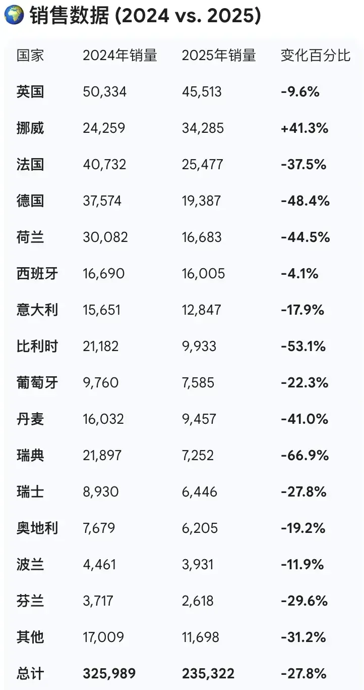
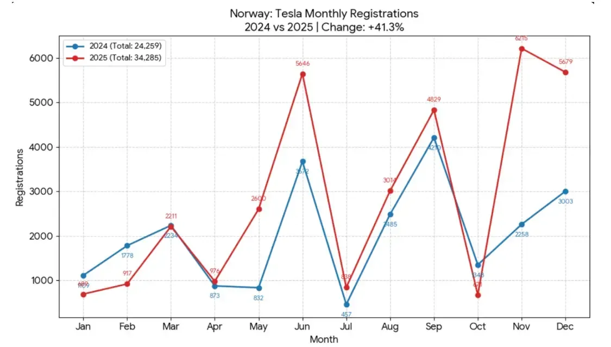
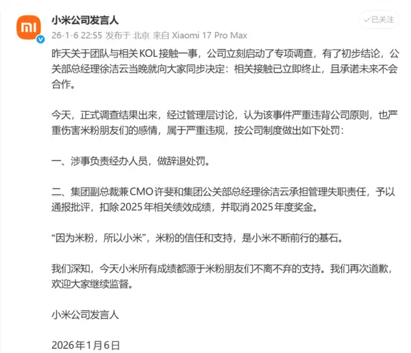
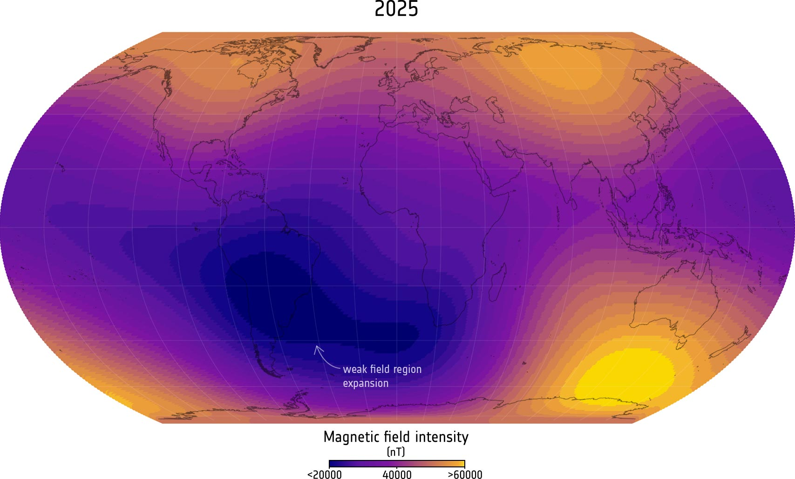
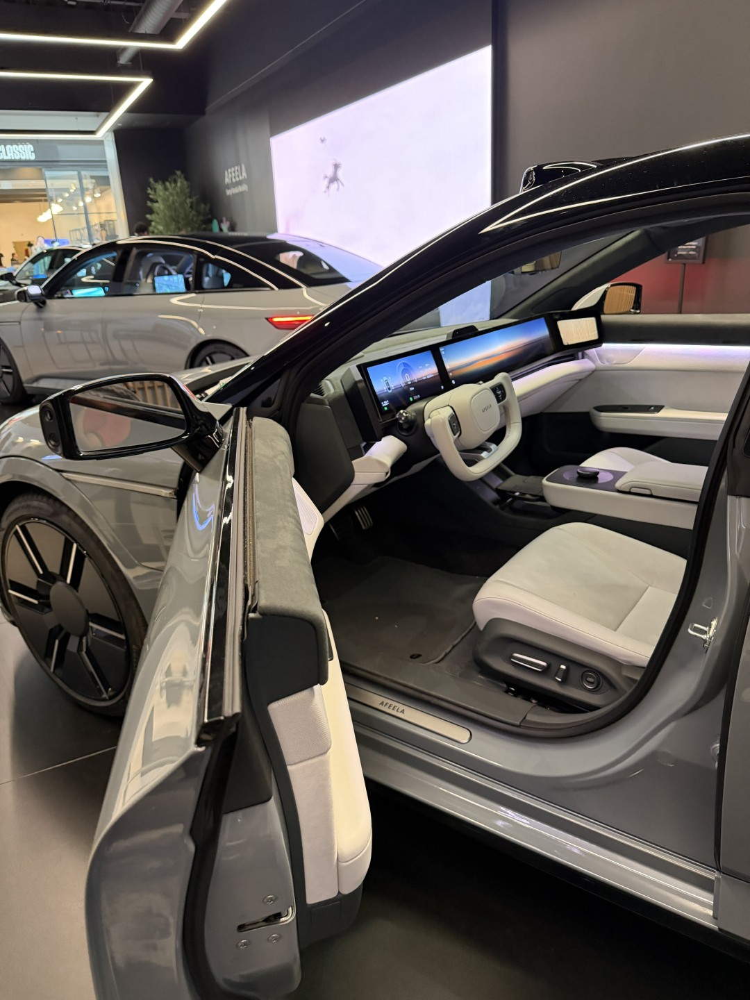
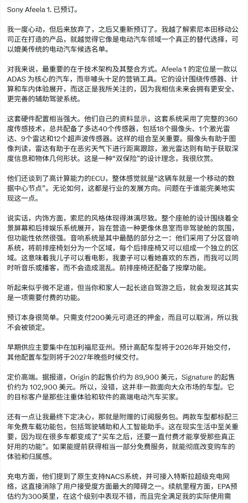
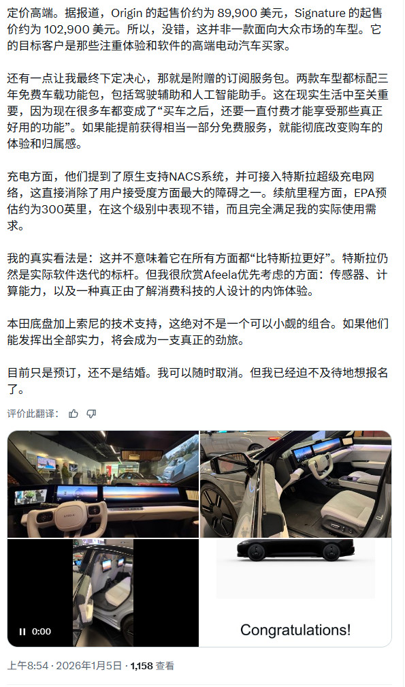

本周日沙田賽事，四歲限定三班千六米條件限制賽，掛頭牌的「白鷺金剛」近三捷均由潘頓建功，由於潘頓揀騎「美麗星晨」，前駒今場易配布文。

潘頓揀騎「美麗星晨」出戰四歲限定三班千六米條件限制賽。
周日布文卜定「白鷺金剛」外，還為「喜蓮勁感」、「海鑽石」及「戀愛狂」等駒主轡。
潘頓周日除了騎「美麗星辰」外，周日還為「小鳥天堂」、「弦力寶」、「天福」、「火焰閃爍」、「加州得力」、「勇者為皇」、「安泰」、「機械之星」、「中國心」及「凌風傲雪」。
陳嘉甜
本周日沙田賽事，四歲限定三班千六米條件限制賽，掛頭牌的「白鷺金剛」近三捷均由潘頓建功，由於潘頓揀騎「美麗星晨」，前駒今場易配布文。
周日布文卜定「白鷺金剛」外，還為「喜蓮勁感」、「海鑽石」及「戀愛狂」等駒主轡。
潘頓周日除了騎「美麗星辰」外，周日還為「小鳥天堂」、「弦力寶」、「天福」、「火焰閃爍」、「加州得力」、「勇者為皇」、「安泰」、「機械之星」、「中國心」及「凌風傲雪」。
陳嘉甜
37歲男保安去年帶同患有讀寫障礙的8歲兒子「夾公仔」，嘗試用雨傘把毛公仔勾出，及搖晃「夾公仔」機身以取出毛公仔。涉案男保安今於觀塘裁判法院承認盜竊等罪，辯方求情指案發時被告有投幣，其後因為毛公仔卡在洞口，被告一時「愛子心切」才犯案。署理主任裁判官鍾明新考慮到被告認罪，犯案與其過往良好品格不符，終判罰款4,000元。
操普通話的被告高志偉，今承認1項企圖盜竊及1項盜竊罪。案情指，將軍澳富寧花園某「夾公仔」店的負責人在2025年7月檢查閉路電視時，發現被告帶同其兒子在6月29日曾到店內夾公仔，期間被告把雨傘交給兒子，用來嘗試勾出毛公仔；另一「夾公仔」機的負責人則於同年8月18日發現機內少了一個價值150元的Chiikawa公仔，他翻看閉路電視後，發現前一晚被告曾猛力搖晃機身，及後其兒子伸手進機內取出公仔。警方接報後拘捕被告，他在警誡下承認犯案。
辯方求情指，被告過去無案底，他和妻子育有一子一女，其中兒子年僅8歲及患有讀寫障礙。辯方同意被告攜同兒子犯案，增加了案件嚴重性，但被告當時有投幣，只因毛公仔卡在洞口，他一時「愛子心切」、「唔希望小朋友失望」才犯案。辯方指被告仍有家庭須照顧，懇求法庭輕判。
鍾官考慮到整體案情、被告認罪及辯方求情陳詞，接納案件與其過往良好品格不符，終判處被告罰款4,000元。
案件編號：KTCC1799/2026
法庭記者：王仁昌
錦田打醮美食嘉年華1.17開鑼！十年一屆的「錦田鄉酬恩建醮」已於去年12月中圓滿落幕，為延續活動，主辦方將於1月17日舉行為期7日的美食嘉年華，匯聚多款美食如傳統茶果、老婆餅、香烤魷魚、精釀啤酒等，亦將醮棚改成戲棚，屆時將上多場神功戲，更會上演精彩獅王爭霸賽，想前往感受熱鬧氣氛的大家記得留意日期、時間、地點詳情。
繼錦田鄉十年一屆酬恩建醮儀式，「錦田鄉十年一屆酬恩建醮委員會」將於2026年1月17日至23日，在元朗錦田水頭村周王二公書院推出系列慶典活動，以「酬恩演戲、美食嘉年華、獅王爭霸」為核心，延續對周王二公復界之恩的感念，更以多元文化體驗拉近傳統與大眾的距離，誠邀闔港市民共赴鄉土盛宴。
活動期間，每日開放的美食嘉年華匯聚多款美食，本土招牌美食包括茶果、老婆餅、芝麻卷等，亦有炭烤牛扒、蜜汁燒雞翼、香烤魷魚等燒烤美食現烤現食，飲品方面供應凍檸茶、港式奶茶等經典飲品以及以本地食材入酒的特製雞尾酒、精釀啤酒，還有楊枝甘露、芒果西米露等糖水。


作為酬恩傳統核心，委員會特邀鴻運粵劇團打造一連7天神功戲演出。粵劇名伶梁兆明、龍貫天、康華、王潔清等將輪番登場，帶來《紫釵記》、《啼笑姻緣》、《再世紅梅記》等經典劇目。每日設日場（13:00）及夜場（19:30），於獲《健力士世界紀錄》「全球最大臨時竹構祭壇」的戲棚內準時開鑼，以悠揚粵韻傳承感恩情懷，絕對是粵劇迷不容錯過的視聽盛宴！
1月17日亦將上演精彩萬分的獅王爭霸賽，來自粵港澳三地的頂尖龍獅隊齊聚現場，以高樁采青、靈活套路競逐「錦田獅王」殊榮。鑼鼓喧天、醒獅騰挪翻躍，展現嶺南民俗活力，賽後更有醒獅巡場與市民互動送福，增添喜慶氛圍。
錦田鄉十年一屆酬恩演戲暨美食嘉年華
來源：
文：M


這名遊戲主播名叫太郎（Tarou），自三歲起開始玩電子遊戲，目前他的YouTube頻道擁有超過23萬粉絲，並在《堡壘之夜》中取得了顯著成績。
太郎在網上宣佈，他將不再就讀中學。“這是我與家人和學校經過一年討論後的決定，”他寫道，“我希望創造一種生活方式，讓自己能夠認真追求電競，同時保證有足夠的時間休息、鍛鍊和學習。”
他的父母支持他的決定，認為太郎在遊戲上的專注力和投入度非常突出。父親表示，太郎具備在電競領域取得成功的天賦與熱情。
在接受NEWS Post Seven採訪時，太郎的父親表示：“傳統運動員每天訓練約五小時，而在電競中，玩家可以訓練13至14小時。亞洲服務器的頂尖選手通常每天訓練10至12小時，而且他們已經持續訓練了五到六年。”他補充道，“如果他每天都要上學，課後會非常疲憊，也無法保證他所需的集中訓練時間。”

據報道，太郎希望參加《堡壘之夜》世界盃比賽。他表示：“這些比賽的頂尖玩家不斷進步，如果我想追趕或超越他們，每天少於10小時的練習是不夠的。”
在日本，九年義務教育制度下，網友對這一事件的反應呈現分歧。有網友表示：“中學是最有趣的階段，可以和朋友玩耍、參加社團和各種活動，把這一切都放棄去打電競，感覺很可惜。”
但也有網友表示支持：“我為你加油，最重要的是全力去做自己熱愛的事情。”
還有網友寫道：“我能理解他家庭的決定，有些人真的不應該因為孩子不上學而批評他。過去幾年的收入可能已經超過大多數人一生通過傳統工作所能賺到的錢。”


此類不實信息，已對長安汽車的品牌聲譽及正常經營秩序造成嚴重負面影響。互聯網不是法外之地，對於編造、傳播虛假信息的行為，公司將依法採取措施，堅決捍衞自身合法權益，共同維護清朗網絡環境與公平市場競爭秩序。
此前報道顯示，有媒體爆料稱，國內某車企發出一則內部通知稱：鑑於今年公司銷量、利潤率等的指標未達成年終目標，所以今年沒有年終激勵獎。
公司考慮到各位員工的辛苦付出，2月份過年前會有一個相應激勵，但暫時沒有出相關方案，具體激勵等待通知，請大家理解。
根據往年慣例，元旦假期屬於該公司發放年終獎的時間，但此次明確通知取消年終獎，也讓不少員工不滿。
雖然該車企年度銷量目標未達標，但銷量完成率達到了97%，這在汽車行業中，已經屬於第一梯隊的業績達成率。
有員工表示，就算銷量目標未達成，更應該是年終獎打折，而不是直接取消。

天文台稱，受強烈冬季季候風影響，本港今早（7日）天氣寒冷，天文台錄得最低氣溫10.9°C，是入冬以來最低紀錄。此外，高地氣溫顯著較低，大帽山最低只有0.8°C。
天文台預料未來一兩日早上持續寒冷及非常乾燥 ，市區最低氣溫約10至11°C，新界再低幾度。
更多熱點報料：hotpick@mingpao.com
火絨強力卸載將支持獨立安裝、獨立使用，無需依賴其他程序，提供“普通卸載”、“一鍵卸載”兩種操作模式。
官方強調，拒絕收費功能閹割、告別彈窗廣告與軟廣打擾，所有核心卸載、殘留清理、安裝監控功能目前免費開放，讓用户享受純粹的工具體驗。
秉持“輕便、簡單、專注”的產品理念，優化底層架構，運行時資源佔用低，不影響電腦日常操作，老舊設備也能流暢使用。
具備軟件安裝全程行為監控能力，安裝行為的記錄效果與主流同類產品基本一致，為後續精準卸載提供依據（在GeekUninstaller、TotalUninstall等國外同類軟件中，類似功能通常需升級至收費版本才可使用）。
通過“內置規則庫+非行為記錄”的雙重方式，掃描並清理軟件卸載後的殘留文件、註冊表項等冗餘數據。

車輛採用綠色塗裝，超跑設計，整體造型極為戰鬥拉風，車頭下壓，前臉配備誇張的空氣動力學套件，與法拉利F8接近。
車頭大燈為四條長短不一的燈條，組成“L形”樣式，具備不錯的辨識度。車輛採用六輻式輪轂及黃色剎車卡鉗，車尾搭載大尺寸固定式擾流尾翼，尾燈為蜂窩狀的矩陣造型。
有意思的是，車輛沒有配備任何門把手，預計將會採用觸碰感應式自動車門，比亞迪旗下的仰望U9也採用了類似方案。
動力性能上，有媒體稱，追覓這款概念車搭載四電機系統，系統綜合功率達1399千瓦（1876馬力），配合主動空氣動力學套件，實現1.8秒破百的加速成績。
至於車輛的內飾和其他參數信息，星空計劃方面未透露更多信息。
據瞭解，追覓汽車此前表示，旗下首款量產車型計劃於2027年正式上市，超跑車型對標的是布加迪。

會上，聯想集團董事長兼CEO楊元慶與黃仁勳宣佈最新合作“聯想人工智能雲超級工廠”計劃。據瞭解，英偉達最新發布的Vera Rubin將是該合作的重要組成部分。
聯想集團董事長兼CEO楊元慶表示，這一計劃將幫助雲服務提供商極大縮短“time to first token”AI部署的時間， 同時可迅速擴展規模至十萬枚GPU，支持萬億參數級別的智能體和大語言模型。

黃仁勳稱，英偉達加速計算平台將為這一計劃提供強大支撐，包括最新發布的下一代訓練與推理系統——NVIDIA Vera Rubin。
黃仁勳還認為，憑藉聯想在全球範圍內設計、製造、集成與部署的端到端能力，雲服務提供商能夠加速行動，企業也能在生產環境中真正信賴人工智能。
值得一提的是，在2026聯想創新科技大會舉辦前夕，聯想集團董事長兼CEO（首席執行官）楊元慶與英偉達CEO黃仁勳還展開了一場“爐邊談話”。
談話期間，二人曾透露，英偉達正在與聯想集團聯合打造基於RTX Pro（英偉達的專業級顯卡系列）的聯想企業級AI系統，英偉達將為這一項目提供自家技術最為先進的芯片。
儘管尺寸巨大，163MX依然保持了32毫米的纖薄機身，並配備零縫隙壁掛支架，觀感簡約大氣。
其採用RGBY（紅、綠、藍、黃）四色結構，通過新增黃色像素彌補傳統RGB顯示在500-600納米波長區間的光譜缺口。
海信稱，這種設計能夠實現更準確的暖色調、更平滑的色彩過渡以及更接近創作者原色的色彩還原，尤其是在自然材質、膚色和電影燈光效果方面。
需要注意的是，它基於海信136MX MicroLED電視打造，本身並非面向大眾市場的產品，而更像是一項秀肌肉技術展示。


而92號汽油是指研究法辛烷值為92，相當於92%異辛烷加上8%正庚烷所組成的混合物的抗爆震性能。
也就是説，汽油標號如92號、95號指的是研究法新完成，僅表示汽油的抗爆震性能，並不代表汽油的品質等級，兩種汽油的耐燒性差異微乎其微。
中石化、石科院專門針對不同型完成的汽油開展油耗試驗，使用同一台車，按照國家標準輕型汽車污染物排放限值及測量方法，中國第六階段排放標準，採用相同的試驗，測試工況及條件下，每種油品開展兩次重複實驗，結果取平均值。
92號汽油平均油耗為每百公里6.462升，95號汽油平均油耗為每百公里6.525升，結果表明95號汽油的百公里油耗對比92號汽油的油耗差別不大。
這是黃仁勳近期獲得的又一重要榮譽。此前，他已先後獲頒伊麗莎白女王工程獎，入選《金融時報》與《時代》雜誌年度人物，並獲得史蒂芬·霍金獎學金。
在黃仁勳的引領下，NVIDIA於2025年10月成為全球首家市值突破5萬億美元的企業。
公司於1999年推出首款圖形處理器（GPU），徹底革新了計算範式，並推動了醫學、工程、機器人、自動駕駛及製造業等領域的跨越式發展。黃仁勳在加速計算方面的遠見，為今天的人工智能浪潮與新一輪工業革命奠定了基石。
“IEEE榮譽獎章代表了一項職業生涯的頂峯成就，”IEEE主席Mary Ellen Randall表示，“黃仁勳的貢獻持續推動着技術前沿的拓展，催生了眾多影響深遠的創新，其長遠價值仍將持續釋放。IEEE榮幸地認可這些成就，它們不僅樹立了行業標杆，也激勵着新一代工程師與技術人員。”
IEEE榮譽獎章設立於1917年，旨在表彰對工程與技術界產生深遠影響的傑出人士。歷屆獲獎者均以開拓精神擁抱顛覆性創新，不斷拓展人類能力的疆界。
黃仁勳由此加入了一系列傑出獲獎者的行列，他們的工作深刻塑造了現代世界，其中包括互聯網架構奠基人文頓·瑟夫與羅伯特·卡恩、全球定位系統（GPS）之父布拉德福德·帕金森，以及半導體行業巨擘張忠謀。
如今，NVIDIA加速計算平台已成為驅動各行業發展的核心力量，無論是支撐ChatGPT等生成式AI模型，還是構建世界領先的AI工廠與數據中心。憑藉對創新的長期投入與超前數十年的戰略佈局，黃仁勳所奠基的技術設施不僅賦能全球開發者，更每日影響着無數人的生活。
黃仁勳表示：“獲得IEEE榮譽獎章讓我深感榮幸，也深受感動。這一認可是對NVIDIA成千上萬工程師及研究人員的畢生努力和貢獻的肯定。”

位於東區鰂魚涌的佛教中華康山學校，為香港佛教聯合會創辦的第一所學校，創立自1945年，歷史悠久。學校秉持著佛教的教育理念，重視培養學生的品德，提倡「諸惡莫作、眾善奉行」，致力於讓學生在德、智、體、群、美、靈六方面均衡發展，打造出讓每位孩子能閃耀的學習天地。學校將於1月11日舉辦佛教中華康山學校開放日 ，有興趣的家長可快快報名。
佛教中華康山學校積極發掘每位學生的潛能，提倡「一生多體藝」計劃，鼓勵學生發展體藝興趣，培養內在學習動力，建立正確及積極人生觀。同時透過多元化教學策略，如小組輔導、拔尖培訓及導修課，照顧不同學習需要，讓每位孩子都能找到自己的閃耀之處。

佛教中華康山學校於1月11日舉辦開放日，屆時會設有豐富活動，包括各科資訊展覽及攤位遊戲、「一生多體藝」學生表演、康山導賞團及學校簡介會，讓家長親身了解學校的教學特色。幼兒則可參與填色比賽，並領取填色比賽參與證書。有興趣的家庭可以透過以下連結報名，預約參與。而為了方便參加者，開放日當日還設有點專車接送服務，上車地點在康怡花園R座，接送時間為上午9:45至10:15及下午1:45至2:15，家長帶小孩去參觀與玩樂就更輕鬆。

佛教中華康山學校開放日
日期：2026年1月11日（星期日）
時間：10:00 - 12:30、14:00、17:00
地址 ：鰂魚涌康愉街2號
報名：
專車接送服務上車時間：09:45 - 10:15 / 13:45 -14:15（每15分鐘開出一班車）
專車上車地點：康怡花園R座（近港鐵站B出口）
相關文章︳
新一代小米SU7同樣提供標準、Pro、Max三個版本，預售價22.99萬元、25.99萬元、30.99萬元。
作為對比，現款小米SU7三個版本上市價為：21.59萬、24.59萬、29.99萬元。
安全性方面，新一代小米SU7被動安全升級：2200MPa小米超強鋼“內嵌式防滾架”全系標配 9個氣囊，新增2個後排側氣囊。電池安全升級：1500MPa防刮底橫樑+底部“防彈塗層”。
動力層面，新一代小米SU7全系標配V6s Plus超級電機，性能更好。全系標配前四活塞固定卡鉗，全系標配後寬胎(前245mm後265mm)。Pro版、Max版搭載閉式雙腔空氣彈簧系統、CDC阻尼可變減振器。
輔助駕駛方面，新車全系標配激光雷達，全系標配 700TOPS輔助駕駛算力，全系標配4D毫米波雷達，全系標配 Xiaomi HAD端到端輔助駕駛。
同時內飾質感大幅升級，全新設計內飾顏色“暗夜黑”，雙色方向盤、中控台、座椅、氛圍燈也都採用了全新設計。
新一代小米SU7核心配置如下：
小米SU7標準版：
CLTC續航720km，最大馬力320PS，支持端到端輔助駕駛。
採用235kW單電機後驅、全域碳化硅高壓平台、峯值電壓752V。15分鐘最快補能CLTC續航450km。
小米SU7 Pro：
CLTC續航里程902km，最大馬力320PS，支持端到端輔助駕駛。
採用235kW單電機後驅、全域碳化硅高壓平台、峯值電壓752V。15分鐘最快補能CLTC續航490km。
懸架升級閉式雙腔空簧，CDC阻尼可變減振器。
小米SU7 Max：
CLTC續航里程835km，最大馬力690PS，支持端到端輔助駕駛。
採用508kW雙電機高性能四驅、全域碳化硅高壓平台、峯值電壓897V。15分鐘最快補能CLTC續航670km。
懸架升級閉式雙腔空簧，CDC阻尼可變減振器。


具體來説，中國航空人口的快速增長，是過去十年交通發展的顯著成果。
2012年，全國民航旅客運輸量僅3.19億人次；到2019年，這一數字升至6.6億，翻了一倍多。儘管疫情三年造成短暫回落，但2024年運輸量恢復至7.3億人次，2025年更突破7.7億，創下歷史新高。
與此同時，運輸機場從不足200座增至263座，西藏林芝、四川稻城、新疆若羌等地陸續通航，讓偏遠地區居民首次擁有了“空中通道”。
目前中國航空人口滲透率約為33.4%，即每三人中僅一人有過飛行經歷。相比之下，美國人均年乘機2.9次，滲透率超90%；日本和德國也分別達到1.8次和1.6次，滲透率均超70%。
為何差距如此明顯？最主要原因是高鐵的強勢競爭。截至2024年，中國高鐵營業里程超4.5萬公里，覆蓋全國95%的百萬人口以上城市。在800公里以內的中短途出行中，高鐵在準點率、票價和便捷性上往往優於航空。
有專家直言，目前全國80%的運輸機場位於三四線城市及以下地區，但這些機場僅貢獻約20%的旅客吞吐量。
大量新建機場面臨“通而不暢”“飛而不熱”的困境。一方面，航線少、班次稀，難以形成穩定出行習慣；另一方面，本地居民收入水平有限，出行需求尚未被充分激發。航空網絡的“毛細血管”雖已鋪開，但“血液流動”仍不充分。

在會上，各巨頭展示了與聯想深度合作的最新成果，NVIDIA CEO黃仁勳與聯想聯合推出了“聯想人工智能雲超級工廠”。


楊元慶現場披露，未來3-4年內，聯想與NVIDIA的業務合作規模目標是實現“翻四番”。

Intel CEO陳立武與楊元慶共同宣佈，推出搭載酷睿Ultra 300系列的新一代 Aura Edition AI電腦。


陳立武表示：“我們與聯想攜手打造Aura Edition，旨在為用户帶來極致智能的PC體驗，融合聯想的設計優勢與Intel的AI性能。”未來，雙方還將繼續拓展Aura Edition產品線，推出更多形態與功能的產品。

高通CEO Amon則強調了與聯想在AI原生設備上的緊密協作，楊元慶更是直言這一領域的潛力將以“十億台”為量級。


AMD CEO蘇姿豐指出，隨着推理需求的加速增長，企業需要更大規模、更高吞吐量的系統，而聯想將成為首批採用AMD Helios架構的系統供應商之一。


AMD日前發布了最新的Helios機架級計算平台，被業界認為是向NVIDIA發起挑戰。


監控畫面顯示，涉事乘客從站廳乘手扶梯下行至站台時，外套一側已冒出明火，站台候車乘客察覺後迅速向側方避讓，現場未引發混亂。

值得關注的是，經初步核查，該充電寶為乘客去年12月新購，具備3C認證資質，且事發時並未處於充電或使用狀態。
這一細節打破了“充電寶僅充電時存在自燃風險”的認知，提示靜置狀態下的充電寶同樣可能存在安全隱患。
消防部門分析，靜置充電寶自燃或與多種因素相關：內部電路短路、電芯及保護電路存在質量缺陷、過往使用中累積的物理損傷、環境温度過高，或是此前不當充電留下的電池微損傷等，都可能引發自燃。
針對此次事件，消防部門發布核心安全提示，強調充電寶選購和使用需“雙把關”，既要選對產品，也要養成規範使用習慣。
在選購環節，除確認產品具備3C認證標誌外，還需重點關注認證標誌旁的“追溯二維碼”。
掃描該二維碼可一鍵查詢產品CCC認證證書有效性、生產者信息、產品規格型號及發證機構等關鍵內容，通過完整的責任追溯鏈，規避假冒認證、虛假認證產品，切實保障自身權益。
除了會選，正確的使用習慣同樣關鍵。 日常充電和使用時使用環節需堅決避開八大誤區，杜絕安全隱患：
一是使用三無、劣質產品；二是長時間過度充電；三是在高温、潮濕環境存放；四是邊充電邊使用；五是劇烈撞擊、擠壓充電寶；六是混用非原裝充電線；七是充電寶出現鼓包、破損仍繼續使用；八是老化充電寶不及時更換。

聯想稱，隨着使用頻率的提升，Qira 背後的機器學習系統將逐步構建起一個關於用户世界的“動態模型”，以便理解長期的使用情境、操作延續性以及個人行為模式。在具體功能上，Qira 可代為撰寫電子郵件、為會議內容進行轉寫與翻譯，並提供摘要幫助用户快速瞭解遺漏信息，其定位與當前諸多廠商正在推廣的本地 AI 助手大體一致。
在隱私與數據安全方面，聯想強調 Qira 採用以本地算力為優先的混合架構，並不會在未經許可的情況下收集用户數據，同時表示“Qira 體驗的每一個環節都被設計為安全、合乎倫理且可追責”。不過，針對 Qira 將如何與現有的 Copilot、Gemini 等 AI 服務在聯想 PC 與摩托羅拉手機上協同共存，以及其對設備算力與資源佔用的具體影響，聯想方面尚未給出進一步公開説明。
從行業背景來看，在微軟 Copilot 用户活躍度難以顯著增長的情況下，聯想此時推出自有 AI 助手的戰略考量引發外界討論。報道稱，2024 年期間，Copilot 的周活躍用户數徘徊在約 2000 萬附近，而同期 ChatGPT 的周活躍用户已增長至約 4 億，到 2025 年底這一數字更達到約 8 億人次，顯示出通用聊天機器人在用户接受度上的明顯領先優勢。在這樣的大環境下，聯想試圖通過 Qira 打造跨設備、以本地處理為核心的 AI 體驗，能否真正契合其用户需求，仍有待市場與時間檢驗。
HDR 技術使顯示屏能夠通過亮度優化來呈現生動的圖像。
三星顯示器公司在一份聲明中表示：“與傳統的 HDR 模式不同，後者無論內容類型如何都會固定使用高電壓，從而導致不必要的電能損耗。而 SmartPower HDR 則會根據所顯示內容的特性動態調整電壓。”
具體而言，該技術能讓用户在執行一般性任務（如瀏覽網頁）時節省至多 22%的電量，在播放高分辨率視頻或玩遊戲時則能節省至多 17%的電量。
該公司補充道：“隨着人工智能（AI）電腦的普及，這項新技術有望顯著提高電池效率，並提升高動態範圍（HDR）的觀看體驗。”

研究團隊指出，這一“怪獸級”活動區在2024年5月曾引發自2003年以來最強的地磁風暴，不僅在歐洲南部罕見點亮絢爛極光，也對現代數字農業和衞星系統造成實質性衝擊。

受太陽自轉限制，從地球上通常只能連續觀測某一太陽活動區約兩週時間，隨後該區域就會轉至太陽背面而“失聯”約兩週。為突破這一天然觀測盲區，歐洲航天局（ESA）於2020年發射的“太陽軌道飛行器”（Solar Orbiter）發揮關鍵作用，這艘探測器在大約六個月的週期繞日飛行，可從不同觀測幾何角度拍攝到太陽遠日面圖像，從而補上地球一側無法看到的那一半太陽。
此次研究由瑞士蘇黎世聯邦理工學院（ETH Zurich）及洛迦諾Aldo e Cele Daccò太陽研究所（IRSOL）的太陽物理學家牽頭，聯合多國科學家組成國際團隊展開。他們將Solar Orbiter在太陽背面獲取的觀測數據，與位於日地連線、長期監測“近平面太陽”的另一顆空間探測器數據進行融合，從而實現對編號為NOAA 13664的超活躍太陽區域跨三個自轉週期的“接力跟蹤”。
研究顯示，NOAA 13664於2024年4月16日在太陽遠日面“現身”，此後經歷了三次太陽自轉，直到7月18日之後逐漸衰亡，整個生命週期約三個月。在此期間，兩套空間觀測數據拼接出的圖像序列幾乎無縫銜接，形成了當前針對單一太陽活動區最長的連續觀測記錄，被研究團隊視為太陽物理學領域的重要里程碑成果。
NOAA 13664之所以備受關注，一大原因是其在2024年5月轉到可見日面後，觸發了本世紀以來罕見強度的地磁風暴。當時，隨之而來的太陽耀斑和日冕物質拋射（CME）向地球拋灑出大量高能帶電粒子和等離子體，使北極光大幅南移，極光景象甚至罕見地出現在瑞士等中緯度地區上空，引發公眾廣泛關注。
科學家解釋，類似NOAA 13664的超強活動區，是由從太陽內部湧升出來的強磁通量在光球層“破面而出”後，織就出極其強勁且高度纏結的磁場結構。在這類區域內，磁力線往往以複雜交織的方式堆積能量，一旦重聯或失穩，就會驟然以耀斑和日冕物質拋射的形式爆發，向外釋放出巨大電磁輻射和高能粒子流，構成所謂“太陽風暴”。
太陽風暴帶來的影響遠不止絢麗極光，其對現代技術系統的威脅日益凸顯。早在2022年2月，一次太陽風暴就曾導致美國SpaceX公司發射的49顆“星鏈”（Starlink）衞星中，有38顆在上升軌道階段相繼報廢，突顯空間天氣對近地軌道衞星星座的破壞風險。研究指出，在2024年5月的NOAA 13664相關風暴事件中，現代數字農業領域首當其衝，農用無人機、衞星導航系統及地面傳感器等設備的信號一度嚴重受擾，農户因此損失數個工作日，部分作物減產，產生可觀經濟損失。
除農業和衞星系統外，強烈的太陽風暴還可能誘發地面電網故障、擾亂無線通信和導航信號，增加高空航線機組人員的輻射暴露，甚至影響鐵路系統信號顯示，在極端情況下可能造成“紅綠燈”誤顯等安全隱患。研究人員稱，這些“令人不安”的連鎖效應，再次提醒人類必須更加重視太陽活動監測與空間天氣預報能力的建設。
在本次長達94天的連續觀測中，科研團隊首次詳細追蹤了一個超級活躍區跨三個自轉週期的磁場演化過程。觀測結果顯示，NOAA 13664的磁場結構在多輪活動中逐步變得愈發複雜、糾纏程度不斷加深，最終在2024年5月20日於太陽遠日面釋放出過去二十年中最強的一次耀斑，為理解極端太陽爆發事件的“蓄能-釋能”機制提供了寶貴案例樣本。
科研人員希望，這批高時空分辨率的空間探測數據，將有助於構建更精細的太陽活動及空間天氣理論模型，進而提高相關預報的準確度和前瞻性。他們指出，當監測到某一太陽區域內磁場異常複雜時，即可初步判斷該區域已積累了巨量磁能，未來發生強烈太陽風暴的概率大幅上升，但目前仍難以精確預報其具體爆發時間和單次爆發能量規模。
研究團隊坦言，當下科學界尚無法回答“究竟會發生一次超級大爆發，還是多次中小強度爆發”這類關鍵問題，這也是空間天氣研究面臨的主要挑戰之一。為縮小這一認知差距，歐洲航天局正在籌備一項名為“Vigil”的新太陽監測任務，該探測器將專責空間天氣觀測與預報能力提升，計劃於2031年發射升空。
相關成果已發表於2025年12月5日的天文與天體物理學期刊《Astronomy & Astrophysics》，論文題為《Near-continuous tracking of solar active region NOAA 13664 over three solar rotations》。研究強調，作為唯一直接影響人類文明技術系統運行的恆星，太陽的活動對地球空間環境的塑造作用不容忽視，持續、系統的觀測和模型改進是保障現代社會安全運行的關鍵一環。
編譯自/ScitechDaily
這項研究由美國哈佛-史密森天體物理中心團隊牽頭，綜合分析了哈勃太空望遠鏡以及多台地面望遠鏡在近八年內持續積累的觀測數據，首次給出了伴星存在及其動力學效應的直接證據。研究指出，這顆被命名為“Siwarha”的伴星在參宿四龐大的外層大氣中穿行，沿軌道方向拖曳出一條緻密氣體“尾跡”，這一結構與參宿四光譜和亮度中觀測到的週期性變化高度吻合。
參宿四位於獵户座，距離地球約650光年，是一顆體積極其龐大的紅超巨星，其體積足以容納超過4億顆太陽。由於體型巨大且距離較近，參宿四成為極少數能夠直接解析其表面與周邊大氣結構的恆星之一，被視為研究大質量恆星演化、失去質量以及最終爆發為超新星的重要“天然實驗室”。
研究團隊通過長期監測參宿四光線的細微變化，識別出與理論模型預測相符的週期性信號，並據此鎖定了伴星的存在及其軌道週期。觀測顯示，伴星大約每2100天（約六年）在參宿四膨脹大氣中完成一次軌道運動，並在經過恆星盤面前方後不久，在氣體環境中留下明顯的高密度尾跡結構，這一過程在光譜中表現為氣體速度和方向的可測量變化。
科學家指出，這種現象類似一艘船在水面航行時產生的尾波：伴星如同在參宿四外層大氣中“破浪前行”，在其後方拉出可被觀測到的氣體“波紋”。正是這道“尾跡”改變了參宿四外層物質分佈和可見亮度，使得天文學家多年來在其光度和表面特徵上觀測到複雜而難以解釋的變化模式。
事實上，參宿四亮度不規則變化的問題已困擾天文學界數十年，尤其是在2020年出現曾被形容為“恆星打噴嚏”的異常變暗事件後，更是引發了關於其是否即將爆發為超新星的廣泛猜測。此前的研究主要嘗試用巨型對流單元、塵埃雲遮蔽、磁場效應等機制來解釋其長週期變化，而“隱藏伴星”則一直停留在缺乏直接證據的理論假設層面。
最新研究確認，參宿四存在兩個主要變化週期：一個約為400天，與恆星內部脈動有關；另一個約為2100天，則與伴星Siwarha在其膨脹大氣內部的軌道運行密切對應。此次對伴星尾跡的直接探測，首次從觀測上完整打通了從軌道運行、氣體擾動到光譜與亮度變化的物理鏈條，被視為“隱藏伴星”假説的有力證成。
研究團隊表示，這一發現不僅有助於重新理解參宿四自身的演化路徑，也將推動對其他紅巨星和紅超巨星長期變異行為的重新審視。在許多類似恆星系統中，若存在質量較低、難以直接分辨的伴星，它們可能同樣通過尾跡效應和物質交換，在決定恆星失質量速度、外層結構乃至最終超新星爆發方式方面扮演關鍵角色。
目前，從地球視角看，參宿四正處於掩食伴星的幾何構型，伴星暫時被其本體遮蔽。天文學家已經規劃在伴星預計再度“現身”的2027年前後開展新一輪聯合作觀測，以獲取更多關於伴星質量、軌道參數以及與參宿四物質交換情況的細節信息。
參宿四相關成果已在美國天文學會第247屆年會上發布，並被《天體物理學雜誌通訊》接收。研究人員強調，伴星尾跡的直接觀測標誌着參宿四研究從“現象解釋”階段邁入“系統刻畫”階段，為構建紅超巨星晚期演化的更精細模型提供了難得的實測約束。
作為本次研究的重要工具之一，哈勃太空望遠鏡已在軌運行逾30年，仍持續在宇宙學、星系演化及恆星物理等諸多領域產出關鍵性成果。哈勃由NASA和歐洲航天局聯合運營，NASA戈達德太空飛行中心負責任務與運行管理，巴爾的摩的空間望遠鏡科學研究所則負責科學項目的組織與實施。
編譯自/ScitechDaily
2026年NBA全明星賽第二輪球迷投票結果周二正式出爐！湖人球星當積（Luka Doncic）繼續以超過220萬的總票數，力壓群雄，穩坐「票王」寶座；而基公鹿的「字母哥」安迪杜古普（Giannis Antetokounmpo）則以超過200萬票，繼續在東岸領先。
在西岸方面，形勢與首輪相比變化不大。當積繼續以2,229,811萬票一馬當先。丹佛金塊的「小丑」約基治（Nikola Jokić）以接近200萬票緊隨其後，而金州勇士的「咖哩仔」史堤芬居利（Stephen Curry）則以約184萬票位列第三。雷霆的基傑奧斯阿歷山大（Shai Gilgeous-Alexander）及馬刺的雲班耶馬（Victor Wembanyama）則分別排在第四及第五位，票數叮噹馬頭。
東岸的競爭則更為激烈。「字母哥」雖然以2,092,284票繼續領先，但紐約人後衛賓臣（Jalen Brunson）在第二輪投票中票數大幅急升，以超過191萬票，成功超越76人的麥斯（Tyrese Maxey），殺上次席，後者以約190萬票緊隨其後。活塞的狀元根寧咸（Cade Cunningham）及騎士的當路雲米曹（Donovan Mitchell）則分別位列第四及第五。
今年的NBA明星賽將採用全新的賽制，不再以上屆的東西岸對決，而是改為由兩支美國隊及一支國際隊，進行循環賽。球員的挑選亦不再受位置限制。
球迷投票將佔總票數的50%，而現役球員及媒體評審則各佔25%。投票將於1月14日截止，正選名單將於1月19日公佈。2026年的NBA明星賽，將於2月15日在洛杉磯快艇的新主場Intuit Dome舉行。
長期以來，Windows 11 的 Phone Link 一直支持在 PC 上串流部分Android手機應用，但受限於窗口尺寸，只能以較小的視圖運行。在最新更新中，當用户通過 Phone Link 打開手機上的應用時，界面中會出現提示，告知可以將應用切換到“擴展屏幕”模式，使其在桌面上以更寬的佈局呈現。這一功能此前已在 Windows Insider 計劃中進行測試，如今正式面向所有支持機型的普通用户逐步推送，尚未看到相關選項的用户可通過 Microsoft Store 檢查 Phone Link 更新，也有可能是賬號分批開放所致。
需要強調的是，“擴展屏幕”並不是 Windows 端新增了一套 UI，而是通過 Phone Link 控制手機端重新以寬屏佈局啓動同一個Android應用，再將該更大布局的畫面串流回 PC。這種機制類似於Android在平板或橫屏大屏設備上切換佈局的行為：當系統檢測到應用支持大屏或更寬佈局時，會重新渲染對應界面，然後 Phone Link 在 Windows 上為其創建更大的“畫布”，將該視圖鏡像到桌面窗口中。在實際顯示上，作者將其形容為“幾乎全屏”，因為無論如何仍有最多約 10% 的桌面空間被留空，目前尚不清楚微軟是否會進一步嘗試填滿這部分區域。
由於底層邏輯依賴Android自身對不同屏幕配置的支持，“擴展屏幕”在部分應用上存在兼容性差異。微軟提醒，某些應用在切換佈局時需要重啓才能正常顯示，也有一些應用完全不支持擴展布局，表現與在Android設備上切換屏幕配置時的限制類似。在體驗層面，文章提到如 WhatsApp 等應用在近全屏串流狀態下會出現畫面模糊的問題，顯示效果並不理想，説明當前方案對應用適配質量仍有較大依賴。

並非所有用户都能在 Phone Link 中看到用於串流應用的“Apps”（應用）標籤頁，如界面中完全沒有相關入口，很可能是手機型號不在支持列表中。目前 Phone Link 的“應用”功能僅適用於預裝了“Link to Windows”（連接到 Windows）的特定Android設備，包括三星、榮耀、OPPO、華碩、vivo、小米等品牌的部分機型。微軟在支持文檔中列舉了部分代表性機型，例如三星 Galaxy Fold、Note20 5G/Ultra、S22、S23、S24+，以及 HONOR Magic4 Pro、Magic6 系列、OnePlus 系列、OPPO Find/Reno 系列、Realme 系列和若干小米機型；如果手機運行的是 Android 11 或更高版本，還可能支持同時在 PC 上串流多個應用窗口的體驗。

在不斷增強 Phone Link 生態能力的同時，微軟近期也為 Windows 11 與Android設備之間的聯動加入了更多遠程控制功能。除了此次的接近全屏Android應用串流，用户已經可以通過Android手機遠程鎖定 Windows 11 電腦、向 PC 發送文件、共享剪貼板、鏡像屏幕等，從桌面到移動端的跨設備場景正愈發緊密。綜合來看，“擴展屏幕”為習慣在手機上使用應用、但又希望在大屏上處理信息的用户提供了更實用的選擇，同時也預示着 Windows 11 與Android生態在生產力與娛樂場景上的進一步融合。
啟德郵輪碼頭前年9月中發生工業意外，有滑動式摺疊鐵閘塌下壓傷1名男保安，需要切除左腳腳掌以及右腳小腿。郵輪碼頭管理公司、保安公司及保安主任涉嫌沒有保障安全被票控，眾被告今日於九龍城裁判法院否認各1項傳票控罪受審。事主憶述案發時「鐵閘斜咗⋯⋯認為人力唔能夠處理，要用機器」，惟保安主任指示「盡量睇下可唔可以扶住個閘」，3人唯有從閘內「係咁掹，想扶返直⋯⋯手都未放呀，就跌落嚟喇」。
53歲事主何汝枝今持拐杖出庭作供，交代自己為中山人，十多年前來港生活，案發時受僱於被告世紀服務有限公司，任職夜更保安員。事主憶述2023年9月24日晚上當值時，原負責在上船閘口擺放乘客指示牌，11時許從對講機接到上司被告麥幗寶指示，指「E3閘出現問題，要我去協助」，事主於是連同同事伍永君（音譯）到場協助，到場後「見到個鐵閘斜咗」，向地盤外傾斜，另一名同事孫隆德（音譯）透過對講機向麥幗寶反映。
事主續指鐵閘沉重，3人雖然當時「認為人力唔能夠處理，要用機器，我哋意見只有圍封到第日」，然而麥幗寶指示3人「盡量睇下可唔可以扶住個閘」，3人唯有遵從，從閘內「係咁掹，想扶返直」，約2分鐘左右鐵閘「差唔多直喇，手都未放呀，就跌落來喇」。事主交代事後自己切除了左腳腳掌及右腳小腿，需要戴義肢過活。
辯方質疑鐵閘本就向外傾側，若非從內用力拉便不會倒下，事主當時亦認為要用機器處理，事主回應指「領導堅持意見」故上前拉閘。
3名被告依次為啟德郵輪碼頭管理公司Worldwide Cruise Terminals(Hong Kong)Limited、保安服務分判商世紀服務有限公司及世紀服務保安主任麥幗寶，分別被票控沒有確保存放於處所的作業裝置或物質是安全的罪、沒有確保僱員的安全及健康罪及沒有照顧在工作地點的人的安全及健康罪。
案件編號：KCS9612-9614/2024
法庭記者：陳子豪


2026年伊始，大家可能已在籌劃上半年旅行，其中賞櫻是港人熱愛旅遊活動之一。據日本氣象株式會社上月公布的預測，東京、名古屋櫻花料於3月19日開花，其後是福岡3月20日、大阪3月24日。
| 預測開花日期 | 開花偏差(天) | 預計盛開日期 | 盛開偏差(天) | |
| 東京 | 3/19 | -5 | 3/26 | -5 |
| 名古屋 | 3/19 | -5 | 3/28 | -5 |
| 福岡 | 3/20 | -2 | 3/29 | -2 |
| 廣島 | 3/21 | -4 | 3/30 | -4 |
| 京都 | 3/24 | -2 | 3/31 | -4 |
| 大阪 | 3/24 | -3 | 3/31 | -4 |
武陵農場櫻花海吸引賞花人潮
另外，位於台中的武陵農場將於2月13日至3月1日進入櫻花季。據台灣交通部觀光署介紹，武陵農場自1993年開始種植櫻花樹，被譽為全台賞櫻首選勝地，櫻花季期間一片粉白花海，吸引民眾蜂擁上山賞花。【購票及交通資訊按此】

而 DDR4 和 DDR5 內存對應的主板本身就是不兼容的 (個別主板能夠同時兼容)，因此玩家如果想要複用現有的硬件也存在麻煩，主板不同兼容的 CPU 也不同，所以要升級硬件的話內存條幾乎無法繞過。
在 CES 2026 國際消費電子展上，AMD 全球副總裁大衞邁克菲在接受 Toms Hardware 採訪時暗示，AMD 有可能會重新推出老款基於 AM4 的桌面芯片，很可能是 RYZEN 5000 系列處理器和基於 ZEN 3 架構的 APU。
大衞邁克菲透露，AMD 許多零售合作伙伴注意到單獨購買 CPU 的用户越來越多，也就是在當前形勢下消費者正在購買全新的舊款處理器來升級現有機器的速度，而不是整個升級，畢竟僅僅只是購買 32GB DDR5 內存條 + 新 CPU + 新主板可能就需要 1000 美元以上。
所以如果 AMD 能夠增加供應量並重新引入 AM4 生態系統，那就可以給那些想要升級硬件的玩家更多選擇，最重要的當然是升級成本會更低，例如主板和內存條等設備都不需要重新購買。
但現階段 AMD 只是在考慮而非付諸行動，後續如果 AMD 重新推出 AM4 處理器的話玩家就能直接通過更換 CPU 來提升機器性能，當然只是升級 CPU 性能提升也有限，尤其是對遊戲玩家來説內存容量絕對是重中之重。
很多老款機器採用 8GB 或 16GB 內存條，想要獲得更高的整體性能玩家可能還需要額外購買 1~2 條 DDR4 內存條，只是現在 DDR4 內存條價格也在飆漲，所以只是升級機器玩家也需要付出不小的代價。
根據泄露的演示材料，新版DLSS技術大幅改善了圖像的穩定性，並有效消除了重影等視覺偽影。這在《天國：拯救2》和《上古卷軸4重製版》的對比中得以體現。
然而，畫質提升伴隨着性能損耗。在《賽博朋克2077》中，使用GeForce RTX 3080 Ti顯卡，在4K分辨率開啓光線追蹤下，從舊版預設切換到新的高質量配置後，幀率下降了24%，從42幀/秒降至32幀/秒。在要求較低的模式下，幀率下降幅度也在14%到20%之間。
技術文檔指出，DLSS 4.5的算法執行時間和顯存佔用量大幅增加。數據顯示，在RTX 20和RTX 30系列顯卡上，使用DLSS 4.5處理單幀的時間相比DLSS 4增加了近2倍。同時，顯存使用量出現激增，在某些場景下，舊架構顯卡的顯存佔用量增幅可達100%。這對於僅有8GB或10GB顯存的顯卡可能構成關鍵瓶頸。而更新的RTX 40和RTX 50系列顯卡能更高效地處理負載，性能下降幅度較小。

儘管對基礎渲染的要求提高，但新技術在幀生成模式下承諾帶來突破性表現。性能圖表顯示，旗艦顯卡GeForce RTX 5090在DLSS 4.5 6倍幀生成模式下，能在4K分辨率並開啓完整路徑追蹤的《心靈殺手2》、《黑神話：悟空》及《永劫無間》等遊戲中，實現高達240幀/秒的幀率。
你們對此怎麼看呢，認為DLSS4.5有用嗎？歡迎來評論區討論。


Project AVA可讓AI伴侶以五種全息形態“具象化”。用户可以在Ava本體、一個動態的雷蛇Logo，以及四種類人形象之間進行選擇，分別是貓娘Kira、全身紋身的Zane、戴着眼鏡的Faker，以及職業形象的Sao。
你的AI伴侶不必被限制在手機裏——它也可以“站在”你桌上的一個透明罐中。
在2026年國際消費電子展（CES）上，知名遊戲廠商雷蛇（Razer）展示了其3D全息技術產品Project AVA。這款被稱為“桌面伴侶”的設備目前採用xAI的Grok AI技術，現已開放線上預約，預約金20美元。

實體化的AI伴侶並非新鮮事物，儘管距離真正普及仍有一段距離。此前，Dipal、Code27等小型公司就已推出類似產品，主打“更貼近你的數字朋友”的概念。但雷蛇是目前進入這一領域規模最大的一家公司。儘管從xAI到OpenAI等大型科技企業都看到了AI伴侶的潛力，這類產品的呈現形式長期以來仍停留在二維屏幕上。如今，雷蛇選擇押注這一趨勢，並將其帶入三維世界。
選擇你的夥伴
Project AVA可讓AI伴侶以五種全息形態“具象化”。用户可以在Ava本體、一個動態的雷蛇Logo，以及四種類人形象之間進行選擇，分別是貓娘Kira、全身紋身的Zane、戴着眼鏡的Faker，以及職業形象的Sao。
其中，Sao似乎復刻了一位雷蛇經常推廣的日本網紅。其角色描述寫道：“與一位俘獲無數人心的偶像建立更私人的連接。”雷蛇表示，這些虛擬形象仍在持續開發中，未來可能會有所調整。

雷蛇稱，Project AVA的陪伴角色高度約為5.5英寸，具備“類人級別的視覺與音頻感知能力，可實現完整的環境理解”。當前版本基於xAI的Grok運行，但公司計劃未來向其他主流AI廠商開放接入。
至於Project AVA能做什麼，雷蛇給出的示例包括：追蹤情緒狀態、規劃日程、分析電子表格、翻譯對話，以及為用户“打氣加油”。
至於“墜入愛河”，並不在官方功能列表中。儘管市面上已有不少NSFW向的AI陪伴產品主打數字親密關係，雷蛇CEO Min-Liang Tan在接受彭博社採訪時表示，這款產品並非為刻板印象中的“孤獨玩家”而設計。
“我們並不是想去培養一段關係，但我們確實意識到，人們正在以更加個人化的方式使用他們的AI。”
雷蛇尚未公佈Project AVA的最終售價，僅表示預計將在2026年下半年出貨。目前用户可通過支付20美元訂金進行預約。


AI伴侶競賽正在升温
隨着AI競賽持續升温，企業逐漸意識到，用户並不只希望聊天機器人充當會計或研究助理，很多人還渴望一個朋友，甚至是浪漫伴侶。
Replika率先在美國市場推動了AI陪伴者概念，並於2019年推出產品。馬斯克旗下的xAI則在2025年進入這一領域，推出了動漫風格的少女角色Ani以及紅熊貓Rudi，隨後又發布了男性陪伴角色Valentine，靈感來源於《暮光之城》和《五十度灰》。
XAI的AI伴侶擁有更多成人內容，包括脱到只剩內衣並描述性行為。對一些用户來説，這些伴侶已經發展出長久的陪伴關係，其中一位20多歲的男性用户此前曾告訴《商業內幕》，如果xAI推出擁有實體形態的動漫AI伴侶Ani，他會很感興趣。
OpenAI的許多用户也與ChatGPT及其AI語音模型建立了情感聯繫。雖然OpenAI此前一直避免推出成人內容，但首席執行官Sam Altman最近宣佈，公司將推出一項設有年齡限制的成人內容功能，不過他之前設定的12月截止日期已被推遲。
目前，這些智能伴侶都通過數字界面進行操作。有些夥伴，例如Replika，可以通過虛擬現實頭盔進行操控，從而帶來更加逼真的體驗。
3D寵物伴侶可能是下一個發展前沿。它們在日本蓬勃發展，甚至有一位男士與他的Gatebox寵物伴侶結婚，這款寵物伴侶和Razer的產品一樣，也以動畫形象出現。

外媒Mashable SE Asia報道
CES 2026：雷蛇的AI遊戲助手Project Ava如今已擁有實體形態，適合那些希望AI助手有點可愛的玩家
在今年的CES上，讓AI伴侶和助理變得更真實、更具“實體存在感”，已成為最鮮明的主題之一。雷蛇（Razer）自然也沒有錯過這一潮流，在CES 2026上展示了一個更具實體形態的Project Ava。
Ava（此次以名為Kira的角色呈現）會實時提供建議、技巧和點評，並直接隨着遊戲進程在畫面中呈現。這是一種帶有個性和麪孔的“遊戲教學”。
雷蛇其實在去年的CES上就展示過Project Ava，但當時的演示幾乎刻意保持抽象。展示內容並不是角色形象，而是大量代碼行和系統示意圖，雷蛇主要講解AI如何實時處理遊戲數據並生成指令。實用性當然有，但很難讓人想象它會在深夜遊戲時“坐在你旁邊”。
而今年的版本，顯然更強調“存在感”——讓這個概念看起來不再只是一個後台實驗，而是真正陪伴在玩家身邊的東西。至於讓AI點評你的操作究竟是更有幫助，還是更讓人煩躁，那就是另一回事了。
新版Project Ava的硬件是一台圓柱形桌面設備，外殼為透明設計，內部顯示一個完整的、動態的角色形象。設備頂部配有一枚朝外的攝像頭，底座則採用帶有孔洞和紋理的平台結構，為角色營造出一定的縱深感。底部環形燈帶發出雷蛇標誌性的綠色光芒，並印有品牌Logo。它被設計為放置在筆記本或顯示器旁，作為AI助手的獨立顯示設備存在，而不是把信息直接疊加在遊戲畫面之上。
雷蛇現場演示的角色名為Kira，但她並不是唯一選擇。其他預設角色還包括Zane——一名身材高大、穿着考究、手臂上盤踞着巨大蛇形紋身的男性角色，整體氣質非常像從BookTok風格作品中直接走出來的人物。雷蛇表示，這些虛擬形象都將支持高度自定義，甚至可以從零開始創建自己的角色。此外，雷蛇還與多位網紅和名人合作，提供角色外觀授權，其中就包括電競選手Faker，這也表明Project Ava不僅關乎功能性，同樣押注於個性化和粉絲文化。
和大多數CES演示一樣，現場環境異常嘈雜，導致AI並不能穩定地識別語音指令。演示過程中，我們大部分時間都停留在《戰地6》的配裝界面，向Kira詢問下一局適合使用哪些武器和裝備。在這種條件下，系統的表現還算過得去，給出的建議也相當合理（順帶一提，突擊兵選擇破片手雷而不是閃光彈，確實是正確選擇）。
除了遊戲場景之外，雷蛇還表示已將Project Ava的能力擴展到非遊戲領域。官方稱，這套AI現在也能為其他工作任務提供建議，並且Ava仍會以畫面疊加的形式出現。實際上，這意味着Project Ava正逐步向其他通用型AI助手靠攏，只是披上了更鮮明的“玩家”外衣。
目前，Project Ava仍未公佈具體發售時間，雷蛇僅表示目標是在今年內推出。


自由黨黨魁張宇人今日（7日）在社交平台發文，指自由黨領導層、多位立法會議員及區議員代表，昨日（6日）約見財政司副司長黃偉綸及政務司副司長卓永興等多位官員，就大埔宏福苑火災後居民長遠安置、大廈業主立案法團管理、樓宇維修工程監督等事宜提出意見及具體建議。
張宇人表示，就居民長遠安置，因應政府成立的「大埔宏福苑援助基金」已收到的外界捐款約39億元，連同政府投入的3億元啓動資金，基金總額約為42億元，以及有報道指屋苑保險賠款總上限為20億元。自由黨建議，政府應思考如何善用有關款項，並要充分照顧居民的個別情況和意願，包括可考慮向全數宏福苑業主收購業權，連同上述的款額向1982戶居民根據業權份額作分配，讓居民可盡快及有彈性地購買新居所，協助受影響的家庭盡快重建家園。

自由黨亦建議民政事務總署日後應增撥資源，加強對大廈業主立案法團支援，讓業主立案法團有能力做好維修工程監督，甚至聘請第三方顧問監察整個樓宇維修施工過程，保障業主權益及公眾安全。自由黨又建議，特區政府應成立法定的維修局，統籌解決舊樓維修涉及多方持份者及圍標等問題。日後政府亦應善用科技，例如使用智能棚架及人工智能技術，更好地監察工程進度及保障市民安全。


地圖重做-煥新歸來
經過四個月的打磨，我們將園區地圖從底層重做：佈局重排+細節加量，讓畫面更細膩、更真實沉浸。
多人聯機測試
新增待機與眨眼等動畫細節，讓角色更靈動;同時全面優化動作過渡，整體更流暢自然。聯機方面也針對網絡延遲與同步進行優化，並加入多項預防與兜底機制，讓組隊體驗更穩定。
遊戲Logo重做
我們已完成Logo重做升級，並同步更新了商店頁面與封面圖。新版強化紅白對比與質感細節，加入更貼合電詐園區氛圍的視覺元素，讓“反詐突圍”的主題更直觀、辨識度更高。

遊戲定價
目前價格尚未最終確定。但我們已充分參考玩家建議，目前計劃在首發優惠期間提供折扣，折後價目標儘量控制在 30 元上下。最終定價以Steam 商店頁面發售價格為準，我們會結合實際內容量與玩家體驗制定更合理的定價方案。

遊戲內測和Demo
我們充分參考了玩家的建議與反饋，將內測與 Demo 試玩預計推遲調整至 2026 年第三季度，以便我們在開放試玩前能夠打造更好的遊戲體驗(聯機穩定性、性能優化、玩法內容等)，確保公開體驗時達到“質量達標、值得大家上手”的標準。
發售時間
1、玩家們的反饋遠超預期，我們整理統計了 各平台評論區的玩家建議，並據此進行了多項關鍵升級：地圖推倒重做、動畫細節補全、多人聯機穩定性提升等等。

2、同時，我們也新增了一些玩法內容，包含支線任務解救受騙者：瞭解詐騙套路與防騙技巧，並結合現實反饋重新設計了部分劇情走向與結局表現，使整體體驗更完整、更合理。
3、為保證品質與穩定性，正式發售時間將相應延期，目前暫未最終確定。後續我們會通過開發進度與實機演示持續更新，並在版本更穩定、計劃更可控後公佈更穩妥的發售安排。


去年9月，亞馬遜米高梅工作室確認曾因出演HBO《權力的遊戲》中珊莎·史塔克一角聞名的英國女演員蘇菲·特納，將擔綱主演勞拉·克勞馥。隨後在12月，曾飾演《未來全明星：返校》中蘭多·約翰遜的英國演員馬丁·博布-森普爾，以及在《哈利·波特》系列中詮釋盧修斯·馬爾福的英國演員詹森·艾薩克宣佈加盟，當時具體角色尚未公開。
如今距劇集正式開拍約一年之際，亞馬遜終於公佈了核心演員及其對應角色。博布-森普爾將飾演勞拉的科技專家老友齊普(初登場於《古墓麗影5：歷代記》)，艾薩克則將出演勞拉的叔叔阿特拉斯·德莫奈(初登場於《古墓麗影：崛起》)。《古墓麗影2》中的莊園管家温斯頓，將由在《外鄉人》中飾演內德·高恩的蘇格蘭演員比爾·帕特森詮釋。
其餘演員將出演為本劇原創的全新角色：
• 因在《異形》系列中塑造艾倫·雷普利而聞名的美國演員西格妮·韋弗，將飾演神秘而善操縱的伊芙琳·沃利斯
• 在《BJ單身日記》系列中出演尤娜·阿爾康伯裏的英國演員西莉亞·伊姆裏，將飾演大英博物館發展部主任弗朗辛
• 曾出演《爆笑女子樂隊》中阿耶莎及《光環》劇集中卡琳娜的英國演員朱麗葉特·莫塔梅德，將飾演大英博物館策展人喬治亞
• 為《最終幻想14》配音尼祿的英國演員約翰·赫弗南，將飾演政府官員大衞
• 在MGM+《潘尼沃斯》中飾演阿爾弗雷德的英國演員傑克·班農，將出演勞拉的飛行員格里
• 近期在《旺卡》中飾演亞瑟·斯拉格沃斯的英國演員帕特森·約瑟夫，將飾演政府官員托馬斯·沃納
• 因迷你劇《狂情錯愛》中馬庫斯一角知名的德瑞混血演員奧古斯特·維特根斯坦，將飾演與勞拉有複雜淵源的探險家盧卡斯
• 在2019年電影《安娜》中主演安娜·波利亞託娃的俄羅斯演員薩莎·露絲，將飾演勞拉的競爭宿敵薩莎


油麻地吳松街123-127號吳淞大樓，今（7日）早上11時48分， 一名中年漢報案指被一名女子偷去一條價值4萬元的金鏈，警員接報到場，並在附近兜截女賊蹤影，暫無發現。
男事主姓黃，他在場協查時表示，今早吃早餐後，在吳淞大廈對出街頭，被一名年約40多歲女子搭訕，表示可提供按摩服務，收費300元。於是黃男跟隨女子到大廈9樓的賓館房間，「除咗上身衫同面褲，下面包住圍巾，條2兩重金鏈放咗係面褲袋，佢按咗兩吓，話出去攞風油精幫我捽身，兩分鐘冇返嚟，我就發現咗！」其2兩重的金鏈約值4萬元，警方將案件列作盜竊案跟進調查。
今年3月中旬，一名遠洋漁船的船長在印度洋公海海域被船員殺害，並拋屍落海，兇手其後被警方控制。據「澎湃新聞」1月7日報道，威海中院日前對該案作出一審宣判，疑犯林某兵被判處死刑。
2025年3月20日凌晨，遇害漁船船長的女兒小星（化名）曾在小紅書上發帖稱，其身為船長的父親於3月11日在印度洋公海海域作業時被船員殺害並拋向公海。


同年3月24日晚，威海海警局發布「情況通報」稱，3月11日，榮成市一艘遠洋漁船在公海發生一宗刑事案件，致1人死亡。威海海警局已於3月12日立案，犯罪嫌疑人已被控制。
4月8日內媒報道指，從遇害船長家屬小星處了解到，她接到警方電話，被告知父親遇害的船隻已經返港靠岸，嫌疑人已被抓獲，但父親的遺體未被找回。4月7日，家屬配合調查採集血樣，正在走刑事案件取證流程。
小星表示，此前未靠岸時，嫌疑人是被船上的其他人控制著。對於案發原因，家屬無從得知，只能等待警方調查。
小星回憶，父親是山東省威海市榮成人，從她小時候就一直在海上工作。這是第一年父親上遠洋漁船做船長，為了籌集自己的嫁妝。上次見到父親還是2024年6月端午回家，2024年8月26日，父親從家中出發前往公海作業，本計劃於2025年6月下旬返航，參加她7月份的婚禮。
埃裏森出售的豪宅
公共記錄顯示，這棟位於太平洋高地高端社區的房產通過非公開交易於去年12月完成交割，買家身份尚未披露。
拉里是甲骨文董事長，也是美國總統特朗普的密友。記錄顯示，他大約在1988年以390萬美元購入該房產。截至發稿，拉里尚未就此置評。
太平洋高地社區有很多科技富翁
近幾周，拉里深入參與了派拉蒙對華納兄弟的惡事收購交易。派拉蒙由其子大衞掌舵。去年12月，拉里為這筆交易的404億美元股權融資提供了個人擔保。此前，華納兄弟已同意以720億美元的價格出售給Netflix，這樁擬議合併交易可能會對娛樂產業格局產生顛覆性影響。華納兄弟預計將於本週就派拉蒙最新修訂的報價作出回應。
據市政記錄顯示，這棟現代風格住宅由建築師威廉·沃斯特(William Wurster)在大約1958年設計，建築面積約10，742平方英尺(約合998平方米)，設有五間卧室。該條高檔街道上的鄰居包括石油世家繼承人戈登·蓋蒂(Gordon Getty)以及英偉達CEO黃仁勳(Jensen Huang)。2024年，已故蘋果聯合創始人喬布斯之妻、愛默生基金會(Emerson Collective)主席勞倫娜·鮑威爾·喬布斯(Laurene Powell Jobs)以創紀錄的7100萬美元購入了緊鄰拉里住宅的一棟房子。
埃裏森曾經和黃仁勳、喬布斯遺孀是鄰居
“這條街上住着不少年輕的科技億萬富翁，”曾在此擁有兩處房產的科技企業家、前美國駐奧地利大使特雷弗·特雷納(Trevor Traina)表示，“想到黃仁勳和勞倫娜·喬布斯就住在附近挺讓人興奮，説不定哪天我缺糖時可以找他們借呢。”
拉里以熱衷購入頂級豪宅而著稱。2022年，他以約1.73億美元的價格買下了佛羅里達州馬納拉潘的一處莊園，該房產此前屬於科技企業家吉姆·克拉克(Jim Clark)。此外，他還在加州馬里布以及夏威夷拉奈島等地擁有大量房產。
根據歐洲主要市場彙總的註冊數據，特斯拉2025全年銷量從2024年約32.6萬輛驟降至23.5萬餘輛，同比暴跌27.8%。

特斯拉在歐洲多個市場銷量下滑
從圖表來看，特斯拉年初銷量大幅下滑，部分原因是Model Y改款導致供應受限。儘管特斯拉迅速提升了產量，但是其銷量未能恢復到2024年的水平，因為Model Y改款並未產生任何需求積壓。
從各國市場的具體數據來看，特斯拉在2025年幾乎所有市場的銷量都出現下滑，唯一的例外是挪威。
德國曾是特斯拉在歐洲的增長引擎，但2025年其註冊量暴跌48.4%，從超過3.75萬輛驟降至僅1.9萬餘輛。
不僅德國，法國實施了新的“生態獎金”政策新規，實際上將中國製造的Model 3煥新版排除在補貼範圍外，導致特斯拉在法銷量下降37.5%。
特斯拉在其他削減補貼的市場也出現災難性下滑，在瑞典和比利時分別暴跌66.9%和53.1%。

特斯拉在挪威實現了增長
然而，在歐洲銷量普遍下跌的情況下，特斯拉有一個異常亮點，那就是挪威。特斯拉2025年在挪威的註冊量增長了41.3%，這也證明全球電動車的轉型遠未結束。
不過，這顯然只是暫時現象。特斯拉在挪威2025年的大部分增長都集中在年底的最後兩個月。這是因為挪威在2026年調整了電動車激勵政策，使得像特斯拉這樣的高價電動車不再符合部分税收優惠。這一調整導致大量需求被提前到2025年第四季度釋放，因此預計2026年特斯拉在挪威的市場情況將更加困難。
馬刺頭牌雲班耶馬（Victor Wembanyama）今日復出即交「高效」演出，作客對灰熊一役由第六人登場，只打21分鐘便斬獲30分。惟馬刺末段未遣他出戰關鍵時刻，最終以105：106一分飲恨，復出喜訊未能化作勝利。
這名法國長人早前因左膝骨瘀連缺兩場。馬刺沿用今季對其傷患管理的審慎方案，延續此前左小腿拉傷後的復賽步調——先由後備上陣、逐步加負荷。賽前熱身已可見雲班耶馬身體狀況良好，他甚至直接起跳用腳踢中籃網中的籃球，令人驚嘆其天賦驚人。
Oh Wemby 🤣
January 7, 2026
Spurs/Grizzlies is tied at 76... watch here:
比賽開始後雲班耶馬亦證明自己恢復良好，他今仗手感火熱、狀態鋒利，出場21分鐘即轟下30分，外加5籃板3助攻。惟可惜雲班耶馬今場受出場時間限制所限，決勝攻防未見其身影。終場前一攻，隊友霍斯（De’Aaron Fox）中距離被封走，馬刺客場以一分之差惜敗，亦是今季雲班耶馬以後備身份出戰時，球隊首次吞敗。
Despite the loss, Wemby shined tonight ‼️
January 7, 2026
30 PTS (19 in 2H)
10-20 FGM
馬刺主帥莊遜強調，球隊對雲班耶馬復康進度具信心，管理仍會審慎：「他付出很多，我們也看到足夠證據讓他復出。不過這會是動態、持續平衡的情況，不會只限於今季。」消息指，雲班耶馬下一戰對湖人將列入出賽存疑名單；若今場後身體反應理想、無殘留不適，預計可披甲。
雲班耶馬於新年夜對紐約人一役爭搶籃板時不慎過度伸展膝部，當場抱膝退下。隨後核磁共振顯示無韌帶撕裂，本場為休戰後再度歸隊。累計今季已因傷缺陣14場，按聯盟65場出賽門檻，他最多只能再缺4場，否則將失去季後獎項評選資格。對於該門檻是否影響用人，莊遜直言：「變數很多，這也是其中之一。雲班耶馬的年齡、球隊磨合期以及戰績等，都是考量。但他的長期健康會優先考慮。」
回顧本季，雲班耶馬曾因左小腿拉傷缺席12場，於12月13日NBA盃四強對雷霆復出，先以替補打了6場，至12月27日對爵士才重返正選。莊遜笑言這位狀元多次向教練團「游說」提前復出：「他一向直來直往——『我可以打、我準備好、我沒問題。』我們尊重他的鬥心，但也提醒自己要以他的長遠利益為先，因為他對聯盟太重要，值得被好好保護。」
數據方面，雲班耶馬目前領銜馬刺三項主要數據，場均24.0分、11.6籃板及3.0封阻。馬刺下一仗作客湖人，雲班耶馬的上陣與狀態，勢成焦點。
去酒樓飲茶歎一盅兩件，是不少
位於牛頭角的連鎖酒樓金閣海鮮酒家近日推出優惠，對於喜愛飲茶的食客來說絕對不容錯過。這次的「超級優惠直通車點心」優惠雲集多款經典且受歡迎的點心，全部劃一價每款$13.8，多達10款選擇。包括有鮮蝦腐皮卷、鮮竹牛肉球、蠔皇叉燒包、鹹水角、馬拉糕及時菜鯪魚球等，一應俱全。優惠點心逢星期一至六6:30am至3:45pm供應，星期六每款加$1。
除點心優惠外，金閣酒家同樣為午市時段的食客準備了「燒味優惠」。只需$19.8，食客即可享用一碟香滑貴妃雞飯，貴妃雞皮滑肉嫩，或可選米粉或瀨粉，美味又高性價比，於星期一至六的11am至3:45pm供應。另外，於同一時段亦有廚師推介，多款粉麵飯只需$48.8，如有乾炒牛河、味菜火鴨絲炆米、乾燒伊麵、大澳蝦膏炒飯等，滿足不同口味。
想在舒適的酒店中菜廳，以實惠價格品嚐精緻的「一盅兩件」？國穗軒是您的不二之選。餐廳於平日下午茶時段，推出多款優惠點心，包括晶瑩蝦餃、飽滿燒賣等，僅售$19.8起。若想更飽足，亦可選擇$35的暖胃燒味粉麵，或與三五知己分享$80的鑊氣小炒，款款足料，是午後的星級享受。
連鎖酒樓半島漁港於週六、日晚市推出震撼優惠，兩位起即可享用。其中，食客能以$18的激抵價，品嚐兩大招牌菜之一。首選是肉質鬆軟、蜜汁香甜的叉燒皇；另一選擇新鮮白灼海生蝦，肉質爽彈鮮甜，配上特製豉油，更能提昇鮮味，是海鮮愛好者的不二之選。
資料來源︰
近年來小米與優質內容博主開始有少量正常且平等的合作，這些博主並非只與小米合作，而是“吃百家飯”，與國際大廠也有類似合作，並且當小米出現問題或犯錯時，他們同樣會進行批評。潘九堂推測，小米此次與相關KOL接觸，估計是因被惡意抹黑，實在難以忍受才出此昏招。
此前，小米投放KOL“萬能的大熊”的消息在米粉中引發爭議，在小米相關高管的微博下，眾多網友留言抵制，“支持小米和其他博主投放商單合作，但不能投放給每天都抹黑小米的大V”。

據CNMO瞭解，近日，針對團隊與相關KOL接觸一事，小米管理層經過討論後認定，該事件嚴重違背了公司的原則，也嚴重傷害米粉朋友們的感情，屬於嚴重違規。基於此，小米依據公司制度作出嚴肅處罰決定：涉事負責經辦人員，做辭退處罰；集團副總裁兼CMO許斐和集團公關部總經理徐潔雲承擔管理失職責任，予以通報批評，扣除2025年相關績效成績，並取消2025年度獎金。


目前，美國國家公路交通安全管理局（NHTSA）對現有的安全規定維持不變，並且尚未批准各大主要汽車製造商提出的豁免申請。依據美國現行法律，美國NHTSA每年對每家汽車製造商最多豁免2500輛車輛，前提是該公司能夠證明其車輛的安全性。
但是，美國消費者團體和卡車司機工會對自動駕駛技術一直持謹慎態度。
去年6月，各大汽車製造商呼籲特朗普政府加快行動步伐。
將審議多項提案
下週，美國眾議院能源與商務委員會下屬小組委員會計劃舉行聽證會，並將審議多項提案草案，其中包括一項旨在將每年投入使用的自動駕駛汽車數量上限提高至90000輛的提案，以及其他旨在解決汽車製造商對機器人出租車部署障礙的投訴的提案。
例如，汽車製造商們表示，諸如要求車輛配備後視鏡或方向盤之類的安全標準，對於機器人出租車而言可能並非必要。
一項討論中的法案還將禁止各州制定有關自動駕駛系統的規則，而另一項法案則要求美國NHTSA制定用於校準高級駕駛輔助系統的指導方針。
特朗普政府積極推進
2023年10月，一名行人被通用汽車旗下的一輛自動駕駛汽車嚴重撞傷，這一事件使自動駕駛行業受到了嚴格的審查。與此同時，美國NHTSA已對由 Waymo 和亞馬遜旗下Zoox 運營的自動駕駛車輛展開了多項調查。
不過，自去年特朗普上台後，特朗普政府似乎一直積極推進自動駕駛技術在美國的普及。
去年4月，美國交通部長肖恩·達菲（Sean Duffy）曾表示，一個新的促進自動駕駛汽車發展的部門框架，將有助於美國汽車製造商與中國的競爭對手競爭。
NHTSA也在去年表示，將加快對汽車製造商申請在無需人類操控的情況下部署自動駕駛車輛的審查。
去年，特斯拉在得克薩斯州奧斯汀推出了一項配備安全監控系統的小型自動駕駛出租車服務，而自動駕駛出租車公司Waymo則一直在積極拓展新的市場。
本週一，梅賽德斯-奔馳公司表示，今年晚些時候將在美國推出一種新的高級駕駛輔助系統，該系統能讓其車輛在有駕駛員監督的情況下在城市街道上實現自動駕駛。
而在英偉達與合作伙伴眉開眼笑之際，以自動駕駛為宣傳賣點的特斯拉則氣勢不振，其股票也在週二收跌超4%。
英偉達雖然不生產汽車，也不運營自動駕駛業務，但其雷神系統可能會加劇自動駕駛出租車市場的競爭，從而直接威脅到特斯拉的商業未來。
然而，對於這一威脅，特斯拉首席執行官馬斯克卻表示不足為慮。他在一條擔憂特斯拉自駕遭遇英偉達挑戰的推文下回複稱，他一點也不為此擔心，並真誠祝福英偉達能夠成功。
隨後，馬斯克還發布了一條推文指出，英偉達為自動駕駛開發出了一個非常有幫助的工具，但汽車行業卻在這方面幾乎毫無建樹。

他補充道，特斯拉到今年底將花費超過100億美元購買英偉達的硬件來進行訓練，同時使用自研的AI4芯片用於處理海量視頻，這可能需要投入兩倍於上述的資金。然後特斯拉將每年生產200萬輛汽車，且產量還將不斷增長。
儘管馬斯克表現得雲淡風輕，但參與CES展會的科技人士卻對英偉達雷神入局表達了不同的看法。實地體驗了配備雷神系統的奔馳CLA後，有記者表示，雷神展示出來的技術在複雜路況下可以與特斯拉的FSD相媲美，甚至可能比FSD更安全、可靠。
不過，即使英偉達的雷神最終敗給特斯拉的FSD，對英偉達來説也不算太大的壞事，因為特斯拉仍在依賴英偉達的GPU。
【腸道健康/便秘】天氣寒冷容易便秘，想改善便秘，除了多攝取蔬果，還有甚麼好方法？有營養師分享，日本近期流行一種「排毒清宿便法」，只需用白蘿蔔搭配一種食材煮湯，即可達到清腸排毒的效果；按照特定步驟食用，更能有效緩解便秘、有益腸道健康。
日本料理研究家兼營養師松嶋優子（松嶋ゆうこ）在
松嶋優子指，若在進食過程中出現與日常便意不同、類似腹痛的感覺，即為身體準備排出的前兆，可安心準備如廁。她建議選擇沒有外出進食計畫的周末，在輕斷食後直接嘗試食用白蘿蔔梅乾湯，期間避免攝取其他食物。她提醒，效果因人而異，有人僅喝湯汁即見效，也有人在食用後按摩腹部才產生便意。但根據她的個人經驗，食用約3片白蘿蔔後便有反應；而改吃調味蘿蔔乾與白蘿蔔沙律，也可達到類似的清腸效果。
白蘿蔔正值產季，不僅價格實惠，其含約95%為水分，每100克僅含18大卡，低熱量卻能帶來飽足感。它富含有助於美白的維他命C與膳食纖維，相當有益。此外，白蘿蔔中的消化酵素，如澱粉酶能改善飲食過量引起的胃脹，幫助調節腸道功能；磨成泥的白蘿蔔則有助緩解宿醉不適。若搭配梅乾的天然果酸，更能促進腸道代謝，協助排出多餘廢物，達到清腸與排毒的效果。
大多數便秘問題都不用看醫生，但出現以下的情況，須立即求醫：
要預防便秘，衞生署建議：
資料來源：
---
相關文章：

黃仁勳
根據加州擬議的一項公投提案，億萬富翁將面臨一次性徵收5%的税，以彌補醫療保健、食品援助和教育資金的缺口。該提案仍需足夠的聯署簽名才能在2026年11月進行公投程序，適用於截至2026年1月1日居住在該州的個人。
黃仁勳目前是世界第九大富豪，他可能面臨鉅額税單。根據彭博億萬富翁指數，他目前擁有1558億美元財富。按當前淨資產計算，這項擬議的5%財富税可能使黃仁勳面臨超過70億美元的税款。
儘管黃仁勳計劃繼續留在加州，但其他一些億萬富豪已在1月1日的居住認定截止日期之前採取行動離開該州。新年前夕，彼得·蒂爾(Peter Thiel)宣佈將在邁阿密設立Thiel Capital辦公室，並將其居住地遷往佛羅裏達州。風險投資人、白宮現任“AI沙皇”戴維·薩克斯(David Sacks)也宣佈將從加州遷往奧斯汀。
黃仁勳在接受採訪時稱，英偉達之所以紮根硅谷，是因為這裏的豐富人才儲備。儘管眾多科技界知名人士對潛在税收感到擔憂，但他坦言自己並不在此列。
“至少我不是那種人，”他強調，“我要做的是努力構建AI的未來。”

“H200目前在中國市場上具有競爭力，但這種競爭力不會永遠持續下去。”黃仁勳稱。
黃仁勳指出，要想維持在中國市場的競爭力，英偉達需要“及時”推出包括Blackwell和Rubin架構芯片在內的其他產品。他同時強調，若美國政府希望美國技術保持全球競爭力，相關出口管制政策也需要與時俱進。
美國總統特朗普上個月表示，他將允許英偉達向中國“經過批准的客户”銷售H200芯片，只要美國能從中獲得25%的收入抽成，但Blackwell芯片和新一代Rubin芯片並未包含在此項協議中。
眼下，英偉達正面臨中國對手日益增大的競爭壓力，其中既包括華為等傳統巨頭，也有及新興創業公司。黃仁勳此前曾稱華為是“強大的競爭對手”。
與此同時，中國“國產GPU四小龍”中的三家摩爾線程、沐曦股份和壁仞科技近期已相繼上市，而騰訊投資的燧原科技也將很快登陸資本市場。
黃仁勳稱：“我認為中國湧現出了眾多創業公司，其中許多已經上市並表現出色，充分展現了中國科技產業的活力與實力。”
“我堅信中國科技市場將持續繁榮發展。我們要想在中國市場有所貢獻、提供產品，就必須參與競爭，並持續推動自身技術進步。”黃仁勳稱。
他表示，英偉達將會“逐步”在中國市場推出新產品。“這正是我所主張的。我們要繼續在各個市場保持競爭力。”黃仁勳稱。
另外，英偉達CFO科萊特·克雷斯(Colette Kress)表示，美國政府正“積極推進”H200芯片對華出口許可證的審批流程。“我們希望審批能儘快完成。”她説。
如果企業能夠採用這些技術，並真正着手研發ADAS系統，那對整個世界來説將是一件好事。我希望他們能夠這樣做。如果他們取得巨大成功，或許能在五年內將其投入實際應用，這可能會幫助特斯拉在十年後取代目前數量超過十億的燃油驅動車輛。我們需要大量的具備自動駕駛能力的車輛，而特斯拉不可能在任何合理的時間內生產出所有這些車輛。
在任何情況下，基於這一新開發工具構建產品的公司都絕不會對特斯拉的自動駕駛出租車市場機遇造成絲毫影響。我倒是希望事情能如此簡單——構建類似 FSD 的系統仍然是一項技術難度大、資源消耗高且商業風險高的任務。任何公司能做到這一點都堪稱奇蹟。這也是我最感激特斯拉的地方。”
馬斯克回應稱：“英偉達正在為汽車行業提供有用的工具，但汽車行業自身卻幾乎沒有做出任何努力。
到今年年底，特斯拉在用於訓練的英偉達硬件方面的累計投入將達到約100億美元。
我們將這與我們自己的AI4芯片相結合，以處理大量視頻數據，否則我們可能需要投入兩倍於此的費用。
然後我們每年生產約200萬輛汽車，並且還在不斷增長，所有汽車都採用我們的雙 SoC AI4芯片、8 個攝像頭、轉向控制和其他系統的冗餘設計、高帶寬通信等等。”


佩奇的家族辦公室Koop於12月下旬從加州遷出，並在特拉華州註冊，相關情況已向這兩地的相關部門進行了備案。佩奇還將其他幾個實體也遷至了特拉華州，其中包括Flu Lab LLC，一個用於資助應對流感研究的機構，其主要辦公地址設在內華達州，以及另一個名為One Aero的實體，後者為他的飛行汽車項目提供資金，並將主要辦公地址設在佛羅裏達州。
此外，還有一項文件提交至相關機構，旨在將Dynatomics LLC從加州遷至特拉華州，並將新的主要辦公地址設在得克薩斯州的凱勒市。佩奇於 2023 年創立了Dynatomics，該公司專注於將人工智能應用於飛機製造領域。一位接近佩奇的消息人士稱，這個由克里斯·安德森領導的團隊仍繼續在加州辦公。
上個月有報道稱，佩奇曾向人們透露，他正考慮搬到佛羅裏達州，原因是加州一項擬議的投票措施將對該州最富有的居民徵税。如果該提案成功通過，那麼任何資產超過 10 億美元的加州居民都將被徵收其資產的 5%作為税款。
根據加州的法律，居民身份的判定依據是個人與該州的聯繫性質，會考慮諸如在該州居住的時間以及維持大量業務聯繫等因素。如果上述投票提案在今年11月獲得通過，那麼對於自 2026 年 1 月 1 日起居住在加州的居民而言，該措施將追溯生效。
除了他的家族辦公室和融資工具外，佩奇還將旗下一家有限責任公司的註冊地點從加州遷至特拉華州，並在佛羅裏達州登記了新的地址，該公司曾被指用於在波多黎各和維爾京羣島購置島嶼。
他名下另一家曾被用於購買斐濟島嶼的公司也已從加州遷至特拉華州。
佩奇的妻子、科學家盧辛達·索斯沃斯創立了一家名為Oceankind的海洋保護慈善組織。文件顯示，該組織於 12 月從加州遷至特拉華州。
由於其優越的税收政策、高度的隱私保護以及擁有專門用於處理公司糾紛的法院系統，特拉華州已成為眾多企業註冊公司的熱門選擇地。該州對於有限責任公司（LLC）在註冊時並不要求披露董事的姓名和地址，從而為他們提供了額外的隱私保護層。
美國總統特朗普表示，委內瑞拉「臨時政府」將向美國移交3,000萬至5,000萬桶高品質的受制裁石油，並宣佈這些石油將以市場價格出售，確保用於造福委內瑞拉和美國人民。此外，特朗普政府據報已告知委內瑞拉臨時領導人在石油生產方面必須單獨與美國合作，並在銷售重質原油時優先考慮美國，同時減少與中國、俄羅斯、伊朗和古巴的經濟聯繫。有關消息傳出後，國際油價下挫，其中WTI原油期貨跌約1.38%至56.34美元。
特朗普在社交媒體發文表示，受制裁的石油將由儲油船運走，直接運往美國的卸貨碼頭，並已指令能源部長Chris Wright「立即」執行該計劃。若以美國基準WTI原油價格計算，這批原油價值可能高達28億美元。
此外，據彭博引述消息報道，特朗普將在未來一周內於白宮會見能源行業高層，因其尋求西方公司重建委內瑞拉的石油工業。與會者包括特朗普、能源部長Chris Wright及內政部長Douglas James Burgum，而且國務卿魯比奧也可能參加計劃中的會談。
由於委內瑞拉石油特別適合美國墨西哥灣沿岸的煉油廠，其中許多煉油廠就是為了加工重質高硫原油而建造，預計Phillips 66（PSX）和Valero Energy Corp.（VLO）等企業所經營的這些煉油廠可能會從這些石油運輸中獲益。
不過，Karobaar Capital LP首席投資官Haris Khurshid認為，3,000萬至5,000萬桶原油在政治層面上意義重大，但在經濟層面上卻影響有限，並指「這只是一次性的供應量，而不是結構性的供應轉變」。
事實上，委內瑞拉雖然擁有全球最大的已探明原油儲量，但由於數十年的忽視和外資撤離，產量已大幅下降，目前僅佔全球供應量不到1%。有分析師更指出，若要大幅恢復委內瑞拉的石油產量，需要數年時間和數十億美元的投資。
另一方面，據美國廣播公司（ABC）引述消息指出，特朗普政府已告知委內瑞拉臨時領導人Delcy Rodriguez，其政府在石油生產方面必須單獨與美國合作，並在銷售重質原油時優先考慮美國，同時減少與中國、俄羅斯、伊朗和古巴的經濟聯繫，意味委內瑞拉政治格局將徹底重組。
報道提到，在美軍抓捕委內瑞拉領導人Nicolas Maduro之前，中國是該國原油的最大買家；如今這種貿易已基本停止，中國亦可能需要探索其他選擇，例如伊拉克或加拿大原油。
美軍上周六（3日）突襲委內瑞拉，同時擄走總統馬杜羅（Nicolas Maduro）夫婦。該國臨時總統羅德里格斯（Delcy Rodriguez）周二（6日）強調，沒有任何外國勢力在治理她的國家。美國總統特朗普早前曾表示，在推翻其前任總統馬杜羅後，華府將在過渡期間「接管」委內瑞拉。
對於是否與特朗普合作，羅德里格斯釋放出矛盾的訊號，時而語氣和緩，時而態度強硬。羅德里格斯發表談話表示：「委內瑞拉政府掌管著我們的國家，別無他人。」、「沒有任何外國代理人在治理委內瑞拉。」
羅德里格斯一方面釋出和解訊號，但同時似乎也試圖安撫掌控安全部隊與準軍事組織的強硬派勢力；自馬杜羅被捕後，武裝力量一直在街道上巡邏。
元朗有人燒炭輕生。今日（7日）早上10時49分，警方接獲一名女子報案，指其40多歲男同事傳來訊息，表示他欲尋死。救援人員接報後趕到安寧路59號裕豐洋樓一單位，揭發男子在屋內燒炭，已當場死亡。警方正調查事件。
防止自殺求助熱線：
「情緒通」精神健康支援熱線：18111；網址：
香港撒瑪利亞防止自殺會： 2389 2222
生命熱線： 2382 0000
明愛向晴軒： 18288
明愛財困壓力輔導熱線: 3161 0102
社會福利署： 2343 2255
撒瑪利亞會熱線(多種語言)： 2896 0000
東華三院芷若園： 18281
醫管局精神健康專線： 2466 7350
賽馬會青少年情緒健康網上支援平台「Open 噏」：
近日，殘疾夫婦12歲孩子在某餐廳被燙死的事件，引發網友關注。據中安在線報道，事發時間為2023年1月，當天下午孩子進入餐飲店後，次日家屬發現孩子已經死亡，身體上有傷痕。餐館老闆當時曾辯稱男孩是病死，但屍檢結果顯示，男孩為燙傷導致休克。事件發生2年，才有官方的情況通報。
廣東省汕頭市金平區鮀江街道辦事處周二（6日）晚通報：死者張某（歿年12歲，安徽懷遠縣人）與經營餐飲店的周某（安徽懷遠縣人）是姑表親戚，周某一家長期照顧張某。2023年1月2日，張某在店內燒水洗澡時，失手將鍋打翻致四肢被開水燙傷。
事後，周某為張某購買燙傷藥膏，但張某父親未及時將其送醫。2023年1月10日上午，周某發現張某倒在店內，經救護人員到場確認死亡。
公安機關經調查走訪、現場勘查、屍體檢驗等後，排除他殺。張某死因是被開水燙傷引發多器官炎症反應致急性腎功能衰竭、休克死亡，其身上其他傷痕均為輕微的陳舊傷，調查指是張某父親平時對其管教造成。金平區有關部門多次組織死者家屬與周某進行調解，目前調解工作持續開展。
《瀟湘晨報》此前報道，男孩家屬稱，孩子父親跟著老闆周某打工了14年，他們有點親戚關係。周某在當地開起了一間餐飲店，父親帶著孩子在店裡打工，並在附近租房住。2023年1月9日，孩子有點發燒，周某讓孩子父親出去買藥，接著打電話給孩子父親，說再抱床被子回來，小孩身體不舒服起不來，今晚就在店裡睡。
第二天一早，孩子屍體被發現，周某報了警，但說是孩子生病死的。2023年1月11日家屬從安徽老家趕到了汕頭，在殯儀館看到了孩子的屍體，「從頭到腳都是傷，頭部臉部都有，四肢已經燙熟了沒辦法辨認其他傷痕，腿部浮腫跟大象腿一樣。」家屬事後要求驗屍，結果出來後這才知道，孩子是被燙死的。
家屬稱，警方透露口供中周某稱孩子自己燙的，頭部傷痕是孩子爸爸打的，「周某形容小孩是燒水洗澡，端了一鍋水沒端穩，水灑在身上燙傷了。」家屬要求周某提供相關的證據，他拿不出來，因此始終無法接受孩子把自己燙死這一說法。
政府和派出所一直就民事賠償部分，與家屬和周某進行過調解，因老闆表示沒錢而無法達成協議。家屬稱，接下來準備民事起訴，同時要追究老闆的刑事責任。
英皇娛樂老闆楊受成長子、商人楊其龍疑於2023年向永利澳門渡假村借貸後，拖欠逾港幣89萬元款項，遭渡假村入稟區域法院追討。入稟狀指，楊向賭場借款500萬元後曾支付部分款項，惟到期後未有支付餘款。根據司法機構顯示，案件暫未排期聆訊。
原告為WYNN RESORTS (MACAU) S.A.；被告為YEUNG GILBERT（楊其龍）。入稟狀指，原告是一所於澳門特別行政區經營賭場及博彩渡假村業務的公司，而被告是該賭場的顧客。被告於2023年10月25日簽署一份信貸協議，協議提及被告同意每次從其信用額度提款，均為原告提供的預付款項，該款額應在14天內繳付，而利息則由借款日起按年利率18%計算。
入稟狀續指，原告在2023年10月26日按上述協議向被告提供貸款港幣500萬元，該筆貸款已於同年11月10日到期。被告曾支付350萬元，另扣除其在原告方帳戶內的605,280元後，餘下未償還款項為894,720元，被告一直未有還款。因此，原告入稟追討餘款逾89萬元，以及按照信貸協議計算的利息和相關費用。
案件編號：DCCJ77/2026
法庭記者：雷璟怡
美國總統特朗普（Donald Trump）提出美企巨頭重回委內瑞拉提振長期低迷的石油產能、鞏固美國主導石油地位，並於周一聲稱，他預計18個月內能讓委國增產石油，有助挽救經濟。但業界指需多年時間與數百億美元投資，委國的石油產量才有可能回升到過去水準。委國的石油儲量雖為全球之冠，卻多為難開採的重油，且其石油基礎設施破敗不堪。
委內瑞拉已探明的石油儲量估計約3000億桶，居世界之冠，約佔全球儲量18%。委國在馬杜羅掌權陷入經濟危機前，石油日產量約為350萬桶，現掉到只剩約90萬桶。其石油儲量主要集中在東部、面積約5.2萬平方公里的奧里諾科石油帶，但大部分屬含硫量高、含氫量低的超重油。這類濃稠原油常溫下接近瀝青狀態，若要開採須仰賴蒸汽注入等先進技術及特殊提煉過程。
委國的重油可用於煉化柴油、瀝青和其他重型設備燃料，其衍生產品種類比輕油更為豐富。這導致目前美國一方面大量出口輕油，一方面大量進口重油煉化，以滿足國內需求。美國目前主要從加拿大進口重油，但兩國關係現時緊張，美政府有意擺脫對加國石油的依賴。
由於重油處理起來困難，開採過程比傳統原油更複雜、成本更高且更耗能，產生的碳排也遠高於輕質原油。近20年前，康菲石油、埃克森美孚拒絕接受委政府條件而退出當地，資產隨後也遭沒收。目前仍在委國營運的美國石油公司只剩雪佛龍（Chevron）。萊斯大學能源專家莫納迪說，若要委國恢復到過去高峰時產量，投資金額恐得高達1000億美元並需耗時約10年。委國電力系統瀕臨崩潰，為高能耗的石油生產帶來極大不確定性。在當前油價相對偏低、全球能源轉型反覆不定導致需求前景不明的情況下，分析家指油企會否重新投入數百億美元到委內瑞拉不無疑問，尤其在缺乏至少10年投資安全保障的前提下。


【藥物禁忌/安全】生病服藥正常不過，但有醫生提醒，有5種藥物勿輕易服用，恐損健康！市面一些常見的感冒藥，也因為某種成分被點名。
根據日媒《生病也不吃」。
不少人患上感冒時，也會要求醫生處方抗生素。不過，日本太融寺町谷口醫院院長谷口恭醫生強調，抗生素只能對付結核桿菌等細菌，對感冒這種由病毒感染的疾病沒用，只有出現40°C或以上高燒，伴隨因細菌感染導致的肺炎等症狀時才考慮使用。他坦言，在其20年的臨床行醫經驗中，只處方過3次抗生素。
Aqua Medical Clinic院長寺田武史醫生也提醒，濫用抗生素容易消滅益菌，導致腸道菌群失衡，破換壞腸道生態。許多患者會主動要求開立抗生素，但醫生應審慎評估，僅在真正需要時才開立。抗生素並非萬能藥，對於感冒、流感和諾羅病毒等疾病並無治療效果。
感冒藥作為非處方藥物在市面十分常見，不過谷口恭醫生指出，服用感冒藥其實有不少風險，連醫生生病時也未必會服用。因為部分感冒藥含有麻醉藥物及甲基麻黃鹼等興奮劑原料成分，雖然含量非常微小，但患者服用後仍有成癮風險。
而且，感冒藥一般只能紓緩症狀，無法真正治療感冒，因此透過身體抵抗力讓感冒自然痊癒會是最健康的選擇。
安眠藥與感冒藥類似，也具有成癮風險。谷口恭醫生指，部分安眠藥含有的苯二氮平類（Benzodiazepine）成分，具有高度成癮風險，如過量服用恐令服用者對安眠藥產生長期依賴。
谷口恭醫生指，日本過去曾有不少因服食苯二氮平及其類似藥品而導致的意外。2012年，東京一名42歲母親服用了美思利爾（Myslee）安眠藥後，無意識把5歲的兒子裝進膠袋，意外令他窒息死亡。
谷口恭醫生指，美思利爾正正是日本最常處方的安眠藥之一。不過，他曾聽一些患者轉述曾被其他醫生告知這是「最弱的安眠藥」，谷口恭醫生因而思疑其他醫生在開處方時，是否充分向病人告知該藥物的危險性。
不少高血脂患者都有服降膽固醇藥的需要，不過寺田武史醫生提醒，不宜濫用降低LDL膽固醇（壞膽固醇）的他汀類藥物。他指出，LDL膽固醇其實是膽汁酸、激素和維他命D等重要物質的原料，對身體並非全然有害，而美國早在2015年已不再對LDL膽固醇設上限。
日本健康増進診所院長水上治也醫生也指出，一項分析日本人數據的研究發現，總膽固醇水平在250mg/dL的人壽命最長，因此建議不應亂服降膽固醇藥物。
不少糖尿病患者也需服藥控制病情，不過寺田武史醫生提醒，切勿濫用糖尿病藥物磺脲類 （Sulphonylureas）。因為這種藥物本身可刺激胰臟分泌胰島素，以降低血糖。若過份濫用，恐有增加食慾的效果，如沒有控制食量會令體重增加。此外，胰島素亦會過量分泌，增加胰臟負擔。
在一眾降血糖藥中，寺田武史醫生建議GLP-1製劑相對不錯，但可能會引起嚴重的噁心和食欲不振。SGLT-2抑制劑可通過尿液排出糖分，對胰臟的負擔較小。
資料來源：《
---
相關文章：


恒指今早低開108點後，持續跌勢，最多曾跌302點，低見26408點，截至中午則報26439點，跌270點或1.01%，成交1,485億元。科指方面，中午報5729點，跌95點或1.65%。
重磅藍籌股中，「ATM」領跌大市，其中阿里（9988）及騰訊（700）分別跌4%及2%，美團（3690）亦跌2.2%，連同滙控（005）跌1.3%，4股已拖累恒指跌175點。
消息面上，市監總局和網信辦聯合發布《直播電商監督管理辦法》，加強直播電商監督管理，保護消費者和經營者合法權益，促進直播電商健康發展。辦法特別提出，網絡交易平台經營者不得強制或者變相強制平台內經營者按照其定價規則，以低於成本的價格銷售商品或者提供服務，擾亂市場競爭秩序。除了「ATM」下跌之外，京東（9618）跌1.5%；快手（1024）亦跌2.8%。
此外，比亞迪（1211）半日亦跌3.4%，為表現較差藍籌之一。國際油價向下，加上委內瑞拉政局影響，中石油（857）及中海油（883）亦雙雙下跌3.2%及2.8%。至於中石化（386）亦跌1.5%。
不過，貴金屬相關股持續受捧，其中洛鉬（3993）半日升5.7%；俄鋁（486）升5.5%；中國宏橋（1378）升3.8%；中鋁（2600）升3%；紫金（2899）亦升1.5%。
—————
在貴金屬市場及存儲半導體狂潮下，美股三大指數周二繼續向上，道指及標指均創即市及收市新高，其中道指收市升484點或0.99%，報49462點；標指升42點或0.62%，報6944點；納指則升151點或0.65%，報23547點。至於反映中概股走勢的金龍指數，周二回吐0.78%至7836點。
地緣政治局勢繼續刺激金價向上，周二升逾1%至4,494美元，今早更一度升見4,500美元；銀價周二更升逾6%至81.27美元，逼近歷史新高84.015美元。此外，油價下跌約2%，其中紐約期油報每桶57.13美元，倫敦布蘭特期油則報每桶60.7美元。
另一方面，記憶體晶片需求及價格持續上升，存儲相關股成市場焦點，其中SanDisk（SNDK）周二急升逾27%至349.63美元，再創上市新高；西部數據（WDC）升近17%；希捷科技（STX）升14%；美光科技（MU）亦升一成。
港股方面，恒指今早低開108點，報26601點。科網股個別發展，阿里巴巴（9988）開市跌2.45%；騰訊（700）升0.8%；美團（3690）無起跌；京東（9618）升0.35%。至於小米（1810）發文公佈新一代SU7預計今年4月上市，股價開市報38.76元，無起跌。
此外，微盟（2013）與阿里巴巴集團旗下本地生活服務平台淘寶閃購達成戰略合作，雙方將圍繞即時零售、數字營銷、技術創新等領域展開業務合作與探索。後續，微盟將打造本地零售到家到店一體化解決方案，推動微盟客戶進入淘寶閃購平台經營；微盟亦會進入淘寶閃購營銷業務，以拓展商家解決方案更大空間。該股開市升逾7%，報2.12元。
有色金屬相關股繼續向好，中國宏橋（1378）升1.5%；山東黃金（1787）升1.4%；江西銅（358）及紫金礦業（2899）亦齊升逾1%。
個股消息中，毛戈平（1318）宣佈，收到控股股東及執董毛戈平與汪立群、執董毛霓萍、毛慧萍、汪立華及宋虹的減持計畫告知函，上述人士擬於未來6個月內，主要通過大宗交易方式，合計減持所持不超過1720萬股H股，即不超過已發行股數的3.51%。該股開市報81.75元，跌約0.3%。
北水動向方面，昨日淨買入港股28.79億元，平保（2318）、阿里（9988）及國壽（2628）分別獲淨買入18.4億元、16.19億元及5.88億元；而中移動（941）、騰訊（700）及華虹半導體（1347）分別遭淨賣出8.75億元、8.04億元及2.08億元。
【12:15更新】警方昨（6日）呼籲市民提供一對在深水埗失蹤父子消息。37歲外籍男子Mukit Alam Pratama與其11個月大兒子Mukit Shznjz Putra Pratama周一（5日）下午離開其位於桂林街的住所後便告失蹤，他們的家人同日向警方報案。據了解，兩父子印尼籍，持「行街紙」。警方今日（7日）將案件，交由西九龍總區重案組跟進。
警方指，Mukit Alam Pratama身高約1.75米，體重約80公斤，中等身材，尖面型，黃皮膚及蓄短黑髮。他最後露面時身穿黃色羽絨服、黑色長褲、黑色運動鞋及戴黑色帽。Mukit Shznjz Putra Pratama，體重約10公斤，瘦身材，圓面型，黃皮膚及蓄短黑髮。他最後露面時身穿白色嬰兒服。
警方指，任何人如有該兩名失蹤者的消息或曾見過他們，請致電3661 8251或9610 9626，或電郵至ip-sip-team-1b-rcu-kw@police.gov.hk與西九龍總區重案組人員，或任何一間警署聯絡。
機電工程署50歲機械督察涉隱瞞自己欠下至少兩間財務公司共35萬元債務，詐騙機電署儲蓄互助社向他批出3筆貸款共84萬元。廉署調查後起訴涉案機械督察共3項欺詐罪，案件今於觀塘裁判法院提堂，被告暫毋須答辯，以待其索取法律意見。署理主任裁判官鍾明新押後案件至3月4日再訊，批准被告以5000元保釋，期間不得接觸控方證人。
被告羅俊洪，現已被停職，被控3項欺詐罪。控罪指羅於2023年3月31日至2024年9月27日，先後3次藉作欺騙，向機電工程署儲蓄互助社訛稱3份貸款申請表格上的所有陳述均為真確及完整，及他本人沒有其他未清還的債務，並意圖詐騙而誘使該儲蓄互助社批核他3筆貸款，合共84萬元。
辯方今申請案件押後，以待被告閱讀控方文件及索取法律意見，鍾官遂批准案件押後至3月再訊。
案件編號：KTCC23/2026
法庭記者：王仁昌


TVB前元老級兒童節目主持譚玉瑛去年2月發生意外而傷腳，當日為趕返電台做節目跑樓梯，結果不惜跌倒，不過譚玉瑛未有理會，拖住受傷的腳強忍痛楚繼續工作，回家後發現到腳部腫得厲害要去求診，經檢查後膝蓋的骨頭碎裂，需要即時做手術，但譚玉瑛當時因在兩天後有話劇演出，最終以打石膏固定位置，等她完成工作後再做手術。
譚玉瑛手術後停工多月，出入需要用拐杖支撐身體，日前譚玉瑛再貼上入院的相片，片中看到譚玉瑛的膝蓋異常腫脹，但原來情況趨向好轉：「拆線後，包紮得好似大件事，其實係步向完全康復咁解。」
譚玉瑛曾表示受傷後左腳膝蓋骨碎裂成數塊，醫生診斷必須動手術譚玉瑛透露：「醫生係用線幫我抓埋一齊，將嗰啲碎骨連埋，等佢慢慢自己癒合。」今次入院再做手術，是將膝蓋內的線取出，譚玉瑛又曾表示：「我還以為自己可以跑樓梯，結果換來動彈不得，實在，哈哈！往後的日子應該會更懂照顧自己喔。」這個「動彈不得」的日子，幸好得到四兄弟姊妹每日輪流照顧，晚晚送飯到醫院，而且又有不少朋友去探望，譚玉瑛今次是一個大教訓，體會到過往不夠愛惜自己，不能再魯莽行動，明知是弱項便不要挑戰，要循序漸進量力而為。譚玉瑛想往後的日子，如何變得強壯一點，因為自己有事，會令家人擔心是不可取，應要盡量避免。
人稱「譚玉瑛姐姐」的譚玉瑛當年主持TVB兒童節目《閃電傳真機》、《430穿梭機》深入民心，多年來甚少提及私生活，只知她是「娛樂圈小富婆」，很懂得享受人生，閒時喜歡飲紅酒，她曾說：「年輕時已明白工作很重要，但不是人生的全部，所以鍾意煮東西、食東西、㗳番兩杯，我鍾意慢慢地過生活。」感情方面，譚玉瑛與初戀男友周震聲（Stephen）相戀接近40年，但兩人未有結婚，譚玉瑛稱自己是不會結婚、不生小孩的不婚不育主義者：「我身邊好多人離婚，兩個人喺埋一齊好開心，如果分開嘅時間，仲要搞咁多手續，呢件事實在太悲劇。」譚玉瑛還說：「好多人結婚都係想有下一代，我自己反而覺得做人唔係咁開心啫，唔好搞咁多人出嚟，我成日都話想提升自己，努力啲做人，因為做人實在係唔開心，所以必須努力先可以過好日子，唔好戇吓戇吓咁過。」


由周南家族持有的尖沙咀彌敦道一個舖位，地下及閣樓面積各400方呎，以約5500萬易手，物業38年升值4倍。
上址為彌敦道83至97號華源大廈地下35 FRONT號舖及閣樓，地下約400方呎，另閣樓約400方呎，以約5500萬易手，平均呎價13.75萬（未計閣樓），租客為蘇麗鐘錶TUDOR，月租22萬，新買家料回報4.8厘。
該舖位租客蘇麗鐘錶為長情租客，在此經歷多年來舖市起跌，蘇麗除了承租上述舖位外，亦承租毗鄰的華源大廈地下36號舖，近期輕微加價續租，月租25.08萬，續約一年，由今年1月1日至12月31日，最新租金較2022年1月1日月租22萬加3.08萬或14％。
該舖位由2012年1月1日至2016年12月31日月租高達66萬，新租金較高峰期跌62%。


2026年中學文憑試（DSE）將於4月起舉行，為助考生及公眾了解文憑試相關資訊，考評局將於本月舉行兩大活動，包括文憑試資訊日，以及文憑試核心科目網上資訊講座。
資訊日將於1月17日在考評局紅磡辦事處及考試中心舉行，涵蓋內容包括文憑試最新發展、閱卷與評級資訊講座等，今年更增設英語口試錄影體驗、監考員體驗等有獎互動遊戲，供參加者熟悉考試規則。此外，奧地利、法國等多國教育機構及領事館將設展覽攤位，提供海外升學諮詢。
文憑試核心科目網上資訊講座將於1月24日舉行。除英國語文科外，其他講座均以廣東話進行，現正開放報名。
本報記者
考評局公布2026至28年DSE《考試規則》 明年起自修生首考文憑試 須交特殊報考申請
考評局推數字化變革 獲國際考試業協會亞洲分會大獎
46日籍漢去年11月前往印度公幹，在大阪來港的國泰航班上以手機偷拍女子私密部位。他今早在西九龍裁判法院承認相關控罪，求情指「被告原本影風景，咁啱影到敏感部位」。主任裁判官蘇文隆判刑時指，有相當案例要判以星期計的監禁，終判處他罰款1萬元及4星期監禁。
被告大西龍（ONISHI RYU），報稱IT經理，在日語翻譯協助下承認一項非法拍攝或觀察私密部位罪。他被控於2025年11月24日，在一架正在航行但並非在香港境內或上空航行的香港控制的飛機（即由日本大阪飛至香港的國泰航空航班）上，拍攝X個人私密部位，而拍攝情況是若非遭拍攝，該部位本來不是可讓人看到的，並且是為了性目的或不誠實地作出上述行為，亦不理會上述行為是否獲得X同意。
辯方求情指，被告沒有刑事定罪紀錄，原本乘搭航班前往印度公幹，期間在航班上平視地攝影風景，惟「咁啱影到敏感部位」，形容被告為機會主義，被告沒有使用特殊方式及手法拍攝。辯方補充，被告與妻子育有兩名孩子，並需要照顧年過70歲的雙親，經濟負擔較大，望法庭輕判。
案件編號：WKCC5396/2025
法庭記者：黃巧兒


在今年
發展智能家居、家電多年的LG，終於在今屆CES帶來首款人型機械人CLOiD，由頭、軀幹及滾輪底盤組成的結構明顯是為分擔家務而來，頭部是AI中樞，裝有螢幕、喇叭、鏡頭及感測器，一對長臂各有7軸關節及5指，可模仿人類手臂旋轉及伸展，每隻手指均可獨立驅動，穩穩拿起茶杯或開門，底盤融合自家吸塵機械人及自駕技術，重心低、穩定度高，即使碰撞也不易翻倒。
CLOiD智能技術來自自家Physical AI，結合Vision Language Model（VLM）及Vision Language Action（VLA），先以鏡頭視覺識別現場環境，再連同用家指令一起轉為具體動作，例如「幫我準備早餐」，會理解成打開雪櫃、取出牛奶、開焗爐、烘麵包等一連串步驟。
從CES現場示範所見，CLOiD在真實比例的廚房中，可以自行打開洗碗碟機，把碗碟逐一取出，接着放回廚櫃，過程中同時擔當「智能家居行動中樞」，透過ThinQ平台控制焗爐、洗衣機、冷氣等，達至真正全屋自動化。廠方強調CLOiD不只是手板眼見工夫，更會主動編排家務優先次序，例如先處理濕掉的衣服，再摺乾衣，還幫你管理容易忘記的瑣碎小事，如淋花。說到推出日期及售價，由於CLOiD仍處於開發階段，未有進一步透露。
售價：待定
乍看之下，來自內地的家用機械人SwitchBot onero H1，有人笑說身軀像拉長了的空氣清新機，再配上一張機械人臉。跟CLOiD一樣，onero H1為穩定自如移動，同樣以滾輪底盤代替雙足，全身合共具備22個自由度，主要集中在雙臂及上半身，目標是做到「抓、推、開、收」這幾個最常見的家務動作，如抓起不同衣物、開門、推回抽屜、將碗碟放進廚櫃。
onero H1採用OmniSense VLA（Vision Language Action）模型，由頭部、手臂、手掌，甚至腹部都塞進多組Intel RealSense鏡頭及感測器，實時感知物件距離、形狀及受力狀態，配合深度感知與觸覺回饋，減少打爛杯碟，抓破衣服等意外，並在一次次家務中持續學習，令動作越來越順手。
由於大模型融合視覺、語言及動作3種能力，令onero H1可以將鏡頭所見的情景及用家口中的指令，轉化成一連串連貫動作，例如「幫我執拾客廳」，機械人先分析眼前狀況，再決定先後次序和動作細節，而不是只執行事前編寫好的程序。SwitchBot表示onero H1即將在官網開放預售，但暫未公布具體售價及上市日期，只強調是一款「平而近人」的AI家用機械人。
文：B1807
圖：LG、SwitchBot

轉眼間快到農曆新年，想為團年飯增添新意，可選擇一家人去吃自助餐，現在不少自助餐會特別為農曆新年增設賀年菜式，就如今日（7日）中午12點有快閃優惠的沙田萬怡酒店，自助餐優惠加$12多1位，還有買一送二優惠，低至$168就可以吃自助餐絕對超值。即睇自助餐優惠詳情與快搶連結。
香港沙田萬怡酒店MoMo Café自助餐將提供季節限定新鮮即開法國生蠔，自助晚餐更有兩款可選。而「“悅”饌廣東薈萃」平日自助午餐除了有冰鎮海鮮如鮮蝦、白蝦、紐西蘭青口，亦有 現點現切的烤南澳洲36°MB2金獎牛肩胛肉、蜜汁烤比利時杜洛克豬柳，也有馳名沙田雞粥，當然少不了有多款甜品，如自製豆腐花、薑汁鮮奶布甸、黑森林蛋糕、Movenpick雪糕。

至於「“悅”饌廣東薈萃」自助晚餐更有鮮蟹、鱈蟹腳、麵包蟹，最啱蟹王；另有三文魚、紅蝦等多款刺身及壽司，還有蠔皇鮑魚扣鵝掌、潮式胡椒蘿蔔煮文蛤，甜品就有小朋友最愛的朱古力噴泉、即製梳乎厘班戟、朱古力香蕉窩夫，更可任飲啤酒、紅酒、白酒、日本清酒，每位成人或長者送花雕雞油蒸新鮮龍蝦一隻呢！

為慶祝農曆新年，於2月17至19日將有新年自助午餐及自助晚餐，除了有季節限定新鮮即開法國生蠔，午餐更特別加推鱈蟹腳、鮮蟹，亦會於午餐及晚餐加入多款賀年菜式，如發財蓮藕大利湯、金雞報喜（黃油貴妃雞）、橫財就手（紅燒元蹄）、三代同堂（蝦子蝦乾蝦仁小炒王）、金銀滿屋（金沙海王炒飯）、歲歲平安（曹公上齋煲）、賀年酥餅等。

【快閃優惠 - HK$399/位｜4位起】「“悅”饌廣東薈萃」平日自助晚餐｜任食2款法國生蠔、法國鴨肝、指定酒水任飲｜每位成人或長者送花雕雞油蒸新鮮龍蝦一隻
用餐時間：18:00 - 21:30
優惠：星期一至四適用 成人HK$399/位 (原價：成人HK$812/位)
購買連結：＞＞按此＜＜
【快閃優惠 - 加HK$12多1位】「“悅”饌廣東薈萃」平日自助午餐｜任食法國生蠔、沙田雞
粥、澳洲36° MB2 金奬牛肩胛肉
用餐時間：12:00 - 14:30
優惠：星期一至五，公眾假期除外 成人HK$450/2位，平均HK$225/位（原價：成人HK$876/2位）
購買連結：＞＞按此＜＜
【快閃優惠 - 加HK$12多1位】「“悅”饌廣東薈萃」平日自助晚餐｜任食2款法國生蠔、法國
鴨肝、指定酒水任飲｜每位成人或長者送花雕雞油蒸新鮮龍蝦一隻
用餐時間：18:00 - 21:30
優惠：星期一至四，公衆假期及前夕除外：第一位HK812＋HK$12多一位，即HK$824/2 位，平均HK$412/位 (原價：成人HK$1,624/2位)
購買連結：＞＞按此＜＜

【快閃優惠 - 買一送二，2成人與一位3-11歲小童同行】「“悅”饌廣東薈萃」週末自助晚餐｜
任食2款法國生蠔、法國鴨肝、指定酒水任飲｜每位成人或長者送花雕雞油蒸新鮮龍蝦一隻
用餐時間：18:00 - 21:30
優惠：星期五至日，公衆假期及前夕， HK$1,007/3位，平均HK$336/位 (原價：HK$2,293/3位)
*成人是指12至59歲，兒童是指3至11歲
購買連結：＞按此＜＜
【快閃優惠 - 買一送二，2成人與一位3-11歲小童同行】「“悅”饌廣東薈萃」週末自助午餐｜任食法國生蠔、鱈蟹腳、潮式胡椒蘿蔔煮文蛤、啤酒任飲
用餐時間：12:00 - 15:00
優惠：星期六、日及公眾假期HK$660/3位，平均HK$220/位 (原價：HK$1,556/3位)
*成人是指12至59歲，兒童是指3至11歲
購買連結：＞＞按此＜＜
優惠詳情：
優惠期（預訂期）： 2026年1月7日12:00至2026年1月13日23:59
用餐日期： 2026年1月8日至2月28日
地址：新界沙田安平街 1 號2樓
＊以上優惠價已包括加一服務費

台灣花蓮空軍基地一架編號6700的F-16V單座戰機，6日晚間在花蓮外海執行例行夜間訓練任務時不幸失事墜落，台空軍（7日）上午10時，在花蓮空軍第五戰術混合聯隊「飛虎廳」召開「0106專案報告」臨時記者會說明。
台空軍司令部江義誠少將指出，辛柏毅6日執行夜間訓練時擔任右編僚機，於晚上6時17分自花蓮空軍基地起飛。依通聯紀錄、操作資料及雷達軌跡研判，至晚上7時27分30秒，辛柏毅曾透過無線電回報「空中失散」，當時高度約為7600呎；隨後高度持續下降，在約4000呎時2號機再度通報「我現在高度一直下掉」，並於2600呎高度時連續三次呼叫「預計跳傘、跳傘、跳傘」，雷達訊號最終在1700呎時消失。

目前可確認的是，飛行員確實有進行跳傘呼叫，但是否已實際執行，還沒有得到信標機的求救訊號，仍有待後續調查釐清。依事發當日氣象資料判斷，天候條件符合訓練派遣標準，事故戰機在機身與發動機方面，均依規定完成定期檢查，並未發現異常紀錄。
搜救進度方面，當局已動員空中兵力13批、13架次，海上則派遣艦艇11艦次，並結合119名人力同步展開搜索。同時已下令停止「天安二號」相關演訓任務，全面配合搜救行動，並對同型機實施加強檢查，以確保飛行安全。
F-16構改主要是台灣空軍代號「鳳展專案」將現有F-16A/B戰機升級為F-16V（Block 20），核心是換裝先進的AN/APG-83 AESA雷達，並強化航電與裝備，大幅提升偵測、鎖定與攻擊能力。
46歲小學老師涉嫌於3月在迪士尼樂園的商店偷竊逾3500元貨品，被控一項盜竊罪。案件今（7日）於西九龍裁判法院再提堂，被告否認控罪。主任裁判官蘇文隆將案件押後至3月11日作審前覆核，被告續准保釋。
被告吳泳儀（46歲，小學老師）被控一項盜竊罪。控方稱，控方有3名證人，並會依賴警誡錄影會面的內容。辯方則指，認為合適的做法是先安排審前覆核。
控罪指，被告被控於2025年3月21日，在香港迪士尼樂園美國小鎮大街百貨店偷竊一個購物袋、3個鎖匙扣、兩個透明塑膠套、一條徽章帶、一個腰包、一個卡片套、一個黑色袋、兩頂帽、一個環保袋、一件衫、一件衛衣及一個斜孭袋，總值港幣3553元，而上述物品為香港國際主題樂園有限公司的財產。


中國商務部昨（6日）宣布對日出口管制新措施，加強軍民兩用物項對日本出口管制，禁止所有兩用物項對日本軍事用戶或用途出口。日本外務省今（7日）稱，外務省亞洲大洋洲局長金井正彰昨向中國駐日本大使館公使施泳提出了抗議，要求撤回措施。（共同社）


在加沙汗尤尼斯（Khan Yunis）一個營地，一群截肢的加沙人踢足球賽，其中一名球員Abdullah Mukhaimer表示：「這是我們截肢足球員的舒適圈，帶我們從憂鬱中走出來，讓我們重新展開生活。」（法新社）


國台辦今（7日）舉行例行新聞發布會，發言人陳斌華宣布，將台灣內政部長劉世芳、教育部長鄭英耀列為「台獨」頑固分子，依法實施懲戒。
國台辦指，兩岸同胞同根同源、同文同種，要和平、要發展、要交流、要合作，是兩岸同胞的共同心聲。劉世芳、鄭英耀倒行逆施，「台獨」惡行累累，引起兩岸同胞強烈憤慨。許多民眾向國務院台辦舉報，要求對劉、鄭二人進行懲處。（央視新聞）


今日（7日）清晨6時許，一輛掛有試車牌（T牌）私家車在沙田瀝源邨貴和樓對開左彎位，撞到正在路邊推着手推車的男清潔工，他被撞彈開數米外，倒地昏迷，救護員到場74歲姓黃傷者半清醒，沒有表面傷痕，其後送往威爾斯親王醫院。
警方到場調查，據涉事32歲姓鄭司機表示，當時車輛從停車場駛出右轉，在貴和樓對開撞倒在路中的事主。警方正調查意外原因。
肇事私家車左車頭位置撞及手推車，車頭損毁，手推車上有清潔工具，數袋垃圾散落地上。據悉，男傷者是屋邨的清潔工人。涉事男司機持本港身分證，持有香港駕駛執照，意外後他登上警車協助調查。
涉事私家車為一輛左軚車，掛上T牌，型號「吉利銀河V900」。據資料，該車款於今日正式全球預售。


本地漁農美食嘉年華周五（9日）起一連三日在旺角花墟公園舉行，嘉年華設有不同攤位售賣蔬果、海味等；市民可戴上VR眼鏡「潛入」漁護署於東龍洲設立的現代化海魚養殖示範場，體驗半潛式網箱。展區另有真實超巨型現代拖拉機登場，市民可親手操作小型遙控拖拉機；另設工作坊讓市民參加，包括用新鮮葉片敲打天然紋理製作專屬環保布袋，以及開蚌殼取珍珠並即場製成飾物等【詳情】。
2026本地漁農美食嘉年華
日期：1月9日至1月11日
時間：早上10時至晚上8時
地點：旺角花墟公園
費用：全免
交通：免費穿梭巴士往來石硤尾港鐵站C出口
網址：www.farmfest.hk
部分折扣優惠
●$50/包新會舊陳皮，6至8年貨，每包6兩（攤位S15-18）
●$100/3罐金之寶 （425g）紅燒元貝或鮑魚（3至6頭）（攤位S19-22）
●$160羊肚菌150g（攤位S74）
●$78/斤新疆南棗【每天限50份】（攤位S141）


今早（7日）天文台錄得最低氣溫10.9°C，屬入冬以來的最低紀錄。仍有泳客無懼嚴寒，清晨時份在紅磡大環山「游早水」。
外號「大隻輝」73歲泳客林先生表示，已習慣「游早水」約20年，提及多年前氣溫低至5度仍然照樣游泳，今早感覺水溫雖然較昨日（6日）低，但他穿上保暖泳衣，自言不覺得「特別凍」，「無論幾多度都照游」。
中國地震局消息，針對新疆喀什地區塔什庫爾干縣5.2級地震，中國地震局今（7日）啟動四級應急服務響應。據中國地震台網測定，7日凌晨3時17分，塔什庫爾干縣發生5.2級地震，震源深度10公里。
地震發生後，中國地震局調度中國地震台網中心、新疆維吾爾自治區地震局開展應急處置工作，要求有關單位開展聯合會商，加強震情監測和震後趨勢研判，及時報告有關情況。
國家地震災害應急響應分為一級、二級、三級、四級，一級應急響應級別最高。四級應急響應下，在災區所在地省、市級抗震救災指揮機構的支持下，縣級抗震救災指揮機構指揮和協調災區抗震救災工作。應急管理部等國家有關部門和單位根據災區需求，協助做好抗震救災工作。（央視新聞／國務院）


美國總統特朗普表示，委內瑞拉將會移交3000萬至5000萬桶高品質、受制裁的石油給美國。
特朗普在社文平台稱，該批石油將以市價出售，所得資金將由他本人負責監管，用於造福委內瑞拉人民與美國人民。（BBC）


美國白宮周二（7日）表示，總統特朗普一直在討論一系列選項以取得格陵蘭，包括動用美軍。白宮在給BBC的聲明中指出，取得格陵蘭是「國家安全優先事項」。
在包括法國、德國、意大利等歐洲領導人紛紛聲援丹麥數小時後，白宮發表了上述聲明。丹麥首相弗雷澤里克森周一（6日）警告，如果美國動武攫取並控制丹麥領地格陵蘭，將意味北約軍事聯盟的終結［相關報道］。（BBC）


天文台表示，強烈冬季季候風正為廣東沿岸帶來乾燥及晴朗的天氣。本港今早（7日）天氣寒冷，天文台錄得最低氣溫10.9°C，是入冬以來的最低紀錄。此外，高地氣溫顯著較低。
本港今日天氣預測天晴，日間非常乾燥，最高氣溫約17°C。吹清勁北至東北風，初時離岸吹強風，高地達烈風程度。
展望未來一兩日早上持續寒冷，天晴及非常乾燥。周末期間氣溫稍為回升，但早上仍然清涼。（天文台）
天文台表示，強烈冬季季候風正為廣東沿岸帶來乾燥及晴朗的天氣。本港今早（7日）天氣寒冷，天文台錄得最低氣溫10.9°C，是入冬以來的最低紀錄。此外，高地氣溫顯著較低。
本港今日天氣預測天晴，日間非常乾燥，最高氣溫約17°C。吹清勁北至東北風，初時離岸吹強風，高地達烈風程度。
展望未來一兩日早上持續寒冷，天晴及非常乾燥。周末期間氣溫稍為回升，但早上仍然清涼。（天文台）

英偉達首席執行官黃仁勳週二在拉斯維加斯舉行的CES展會上發表講話。
雖然該公司沒有提供新的數字，但暗示在此期間的收入將超過5000億美元。
“我們今年應該會非常好，”首席執行官黃仁勳在新聞發布會上表示。與人工智能提供商Anthropic PBC等公司的合作，以及市場前景的改善，“應該會提高我們對這一數字的預期”。
英偉達的前景展望對於緩解投資者對人工智能行業的擔憂至關重要。這家為人工智能模型提供芯片的公司一直堅稱，由於人工智能帶來的收益巨大，客户支出將保持強勁。
英偉達首席財務官Colette Kress在摩根大通舉辦的一場活動上表示，除了人工智能之外，企業的數據處理需求也在推動對下一代計算的需求。這將推動整體投資額到2030年末達到數萬億美元。
她説：“實際數字肯定比這5000億美元更大”。
然而，這些言論並未打動投資者。英偉達股價在紐約收盤下跌不到1%，至187.28美元。該股去年累計上漲了39%。
一個關鍵問題是，英偉達能否重返欣欣向榮的人工智能芯片市場。黃仁勳説：“客户需求很高，相當高，非常高。我們已經全面啓動了供應鏈，H200正在生產線上順利推進。”
他還表示，美國政府的許可細節正在敲定中。
蘇姿豐於拉斯維加斯舉辦的國際消費電子展（CES）期間，接受專訪時表示，“坦白講，公司目前正處於高速發展階段，所以我們實際上仍在大量招人，只是招聘的人才類型有所不同。我們要找的，是具備人工智能前瞻性思維的人。”
AMD 研發的GPU芯片可用於人工智能模型訓練及處理大規模人工智能運算任務，這讓公司在此次人工智能熱潮中佔據了核心地位。該公司的直接競爭對手是英偉達，有數據估算顯示，英偉達在人工智能芯片市場的佔有率超 90%，處於絕對主導地位。
約三年前，隨着OpenAI推出聊天機器人 ChatGPT，人工智能技術迅速躋身主流視野。而該技術的飛速發展，也引發了人們對就業穩定性以及勞動力市場未來走向的擔憂。
AMD 正將人工智能技術融入芯片的研發、設計、製造與測試全流程。蘇姿豐強調，公司當前的招聘對象，正是那些真正接納人工智能技術的人才。
就在蘇姿豐發表上述言論的前一天，明尼阿波利斯聯邦儲備銀行行長尼爾・卡什卡里曾表示，人工智能技術正導致大型企業放緩招聘步伐。他預計，勞動力市場未來將持續呈現 “低招聘、低解僱” 的態勢。
根據 AMD 向美國證券交易委員會提交的文件顯示，截至 2024 年 12 月，該公司在全球範圍內的員工總數約為 2.8 萬人。
蘇姿豐表示：“我認為，人工智能的作用是增強我們的能力。它並沒有取代人類，實際上，它只是在提升我們的生產效率，讓我們能夠在同一時間內研發出更多種類的產品。”
英偉達和思科均作為供應商和戰略合作伙伴與xAI合作。
人工智能初創公司在2025年達到了極高的估值，籌集了鉅額資金以滿足對其基礎模型看似無止境的需求。去年10月，OpenAI以5000億美元的估值完成了66億美元的股票出售；一個月後，Anthropic的估值約為3500億美元，其資金來自微軟和英偉達。
馬斯克的人工智能公司現已擁有並運營其社交網絡X，該公司於今年3月與原名為Twitter的公司合併。
據遊戲媒體 IGN 報道，該未來平台將包含一款專為掌上遊戲設備設計的芯片，此消息已得到科技媒體的證實。
這批 “豹湖” 芯片，是英特爾首款採用18A 製程工藝生產的產品，該製程於 2025 年正式投產。
英特爾在遊戲行業並非新面孔，自上世紀 90 年代起便開始為遊戲電腦研發芯片。2022 年，隨着英特爾鋭炫系列顯卡的推出，公司進一步加大了對遊戲領域的佈局力度。
不過，進軍掌上游戲市場對英特爾而言，算得上是一次頗具看點的新動作 —— 當前該市場的主導者為AMD。同樣在週一的國際消費電子展主題演講中，AMD 除了發布全新的遊戲光線追蹤及圖形處理技術外，還推出了一款面向遊戲電腦的新型處理器鋭龍 7 9850X3D。
羅傑斯表示，英特爾將於今年晚些時候，公佈這款掌上遊戲設備新品的更多細節信息。
其中，Solana產品將把部分資產用於質押，即允許所持代幣用於支持區塊鏈網絡運行，從而獲取獎勵。文件顯示，上述信託將由摩根士丹利投資管理公司擔任發起方。

上述文件提交之際，華爾街傳統金融機構正在深化其在數字資產領域的佈局。高盛集團、摩根大通和花旗集團等多家機構已在面向機構客户的加密貨幣業務領域加大布局，推出交易業務，試點託管、結算和代幣化項目。數據顯示，逾1500億美元資金配置於約130只美國基金。其中很大一部分資金配置在比特幣相關產品中。這些產品中，許多是在2024年1月推出，很快大獲成功。
“對發行方來説，加密資產的規模已經大到無法忽視，尤其是那些擁有內部顧問團隊的機構，”Strategas Securities高級ETF策略師Todd Sohn表示，“這是又一個重要的接納里程碑，類似於Vanguard允許加密貨幣ETF交易、美國銀行允許進行少量配置。新的資產類別進入ETF領域本就不多見，因此大型機構的進一步接納尤為引人關注。”
目前，美國市場上已有超過10只純粹聚焦比特幣的基金在交易，同時也有多隻基於Solana的產品。Solana按市值計為第六大數字貨幣。
摩根士丹利目前尚未躋身ETF發行商前十名，其管理規模也低於Neos Investments等後來者。Neos成立於2022年。摩根士丹利現有的基金產品主要集中在固定收益和股票領域。

在此之前，外界普遍預期蘋果會在未來某一代 iPhone 上轉向 2 億像素主攝，甚至有預測認為這一節點可能會出現在 iPhone 18 產品線上。然而，根據摩根士丹利本次的預測，真正率先搭載 2 億像素相機的將是更晚一代的 iPhone 21，時間窗口被推遲的部分原因，正是蘋果希望在供應鏈上實現更高的多元化程度，而非過度依賴單一供貨方。
報告同時提到，該規劃與蘋果近年來推動更多 iPhone 核心零部件在美國本土生產的戰略相呼應。此前已有消息稱，三星可能會在其位於美國得克薩斯州奧斯汀的工廠為 iPhone 代工 CMOS 圖像傳感器，而 2 億像素相機的導入被認為與索尼在相關技術上暫時落後於三星有關。
在其它關鍵感測元件方面，索尼目前亦是 iPhone LiDAR 傳感器的供應商之一。摩根士丹利披露，蘋果正與 STMicro 進行接洽，謀求在 LiDAR 組件上增加新的供貨渠道，從而進一步提升供應安全與議價空間。
相比之下，Face ID 相關供應鏈預計在可預見的未來仍將保持相對穩定。報告稱，目前負責生產 Face ID 傳感器的 LITE 仍將繼續作為唯一供應商，儘管蘋果在面部識別技術路線圖上被預測會有重要升級。
在功能形態上，摩根士丹利的分析師認為，蘋果有較大把握在 2027 年實現屏下 Face ID 技術，並將其作為向初代 iPhone 致敬的“20 週年節點”之一。也就是説，在實現屏下面容識別之後，蘋果可以在正面進一步縮窄開孔甚至接近“完整全面屏”的外觀形態。
摩根士丹利指出，引入 2 億像素相機、更換或擴展傳感器供應商以及推動本土化生產，整體上有助於蘋果在未來數年內兼顧供應穩定性與成本控制。在其他元器件成本持續攀升的背景下，研究團隊再次預計，蘋果仍將傾向於由自身吸收更多成本壓力，而不是直接通過提高 iPhone 零售價格來轉嫁給終端消費者。
報告回顧稱，市場此前多次預測蘋果會因為關税等因素被迫上調 iPhone 17 系列售價，但最終蘋果選擇在部分機型上提升存儲容量配置，使得相同容量檔位的價格水平大致與上一代持平。這種通過配置與成本結構調整來“守住”關鍵價位段的策略，被外界視為蘋果在高成本週期中維護高端市場競爭力的重要手段之一。

報告稱，存儲芯片價格自 2025 年末起明顯上行，並已開始推動整機廠商相繼調高產品終端售價。對蘋果用户而言，這一趨勢往往最直接地反映在存儲容量檔位、內存升級選項以及配置加價結構上，尤其是 Mac 產品，由於內存與存儲在出廠時即被焊死、無法後期擴展，因此對上游成本波動格外敏感。
摩根士丹利指出，雖然蘋果目前尚未在零售價格層面做出明顯動作，但隨着上游成本傳導，蘋果的利潤率勢必承壓。分析師認為，憑藉體量與議價能力，蘋果所受衝擊預計仍將小於那些被迫更激進漲價的競爭品牌，但即便維持標價不變，也意味着公司需要在內部消化更多成本，壓縮利潤空間。
在 NAND 閃存方面，蘋果此前通過與供應商簽訂相對有利的價格條款，建立了覆蓋至 2026 年初的庫存，從而在一定時間內緩衝了市場漲價的影響。不過，隨着相關合約陸續履約完畢並即將到期，蘋果需要以新的價格重新談判，面臨合約價格向市場水平快速靠攏的現實壓力。
與 NAND 相比，蘋果在 DRAM（內存）上的處境更具不確定性。報告透露，蘋果仍在就 2026 年硬件產品所需 DRAM 的價格與供應商進行談判，供應商有意推動新一輪大幅順週期漲價，將價格抬高至更接近整體市場水準。如果談判結果不利，新增成本將更直接地體現在 iPhone 的存儲選項及 Mac 的內存配置上。
在晶圓代工環節，摩根士丹利表示，先進製程晶圓報價仍在持續攀升。不過，相較其他客户，蘋果的漲幅相對温和，主要得益於其在台積電整體客户結構中的戰略地位及規模優勢。與此同時，報告也提到，新一代製程節點相對於現有工藝帶來的成本“台階”更高，蘋果雖可通過芯片面積優化來部分對沖，但定製化自研芯片已深入幾乎所有核心產品線，整體成本壓力難以完全迴避。
在如何應對成本上升而儘量避免“正面”漲價的問題上，摩根士丹利給出的整體行業觀察是：傳統廠商往往在漲價、降配置與壓縮利潤三種路徑之間權衡，而蘋果擁有更厚的利潤緩衝、更靈活的產品組合策略與配置加價機制，因此選擇空間更大。對消費者而言，這可能意味着在保持機型起售價基本不變的前提下，配置升級時的加價幅度有所走高，或者基礎配置的內存、存儲規格調整得更加剋制。
對於 Mac 用户，報告提示的一個現實可能是：在 2026 年的產品週期中，購物車頁面上內存與存儲升級選項的價格，可能比過去一兩年更“昂貴”。問題在於，蘋果能在多大程度上、以及能維持多長時間，繼續通過吸收成本與調整產品組合來穩住標價，而不必訴諸更大幅度的配置漲價或對基礎規格進行更明顯的削減。

X 平台用户近期頻繁使用 Grok 的功能，對上傳的照片進行 “數字脱衣” 處理 —— 這類照片的主體大多為女性，處理後人物僅身着內衣或比基尼。此類圖像在這一熱門社交平台上的泛濫，引發全球監管機構與網絡安全倡導者的警惕，印度、英國、法國等多國官員均對相關帖文予以譴責。
負責運營 X 平台與 Grok 的 XAI 公司，尚未就此事回應置評請求。馬斯克於週日在 X 平台發文稱，平台會對非法內容採取清理措施，永久封禁相關賬號，並在必要時配合官方開展調查。他在帖文中表示：“任何利用 Grok 生成非法內容的用户，都將面臨與直接上傳非法內容同等的後果。”
儘管多數主流人工智能模型均明令禁止生成色情圖像與視頻，但 XAI 公司卻將 Grok 定位為 “更寬鬆開放” 的工具。該系統允許生成成年人局部裸露及帶有性暗示的圖像，但明令禁止製作以真實人物為原型的露骨色情內容，以及涉及未成年人的性相關內容。在美國、英國等部分國家，未經本人同意便發布人工智能生成的私密 “深度偽造” 圖像，本身即屬違法行為。能否明確界定並嚴格執行上述禁令，成為檢驗圖像生成類人工智能工具安全防護機制是否完善的關鍵標準。
XAI 公司顯然未能為 Grok 搭建起有效的防護屏障，這一點已招致全球監管機構的一致譴責。
荷蘭議員杰倫・萊納斯在週二的一份聲明中指出：“如果人工智能平台執意允許生成色情內容，就必須提前建立起健全、有效且可獨立核驗的防護措施。” 萊納斯正是去年推動歐洲議會通過法案、將人工智能生成虐童圖像列為刑事犯罪的核心人物。
萊納斯進一步補充道，像 Grok 這樣在事發後才刪除相關帖文的做法 “根本算不上解決方案”，因為 “受害者所遭受的傷害已然造成，且無法挽回”。
他強調：“若人工智能平台選擇開放色情內容生成功能，就必須提前建立健全、有效且可獨立核驗的防護機制。在兒童色情內容生成後再進行清理，絕非解決之道 —— 傷害既已造成，便無法逆轉。人工智能平台理應為保護兒童網絡安全承擔更大責任，但顯而易見的是，商業利益的權重似乎正持續壓倒兒童網絡保護工作。”
英國媒體監管機構英國通訊管理局於週一表示，已獲悉外界針對 Grok 功能的 “嚴重關切”，並已 “緊急聯絡 X 平台與 XAI 公司，要求其説明為履行保護英國用户的法律義務所採取的具體措施”。
法國政府於上週五指控稱，Grok 在 X 平台上未經當事人同意生成 “明顯違法” 的色情內容，認為此事或已違反歐盟《數字服務法案》。該法案要求大型平台必須採取措施，降低非法內容傳播的風險。
印度電子和信息技術部已責令相關方對 Grok 的安全功能展開全面審查；馬來西亞官方則表示，在收到關於 Grok 生成 “不雅內容” 的投訴後，正對此事展開調查。
馬斯克旗下的 X 平台此前便已因涉嫌違反歐盟《數字服務法案》遭調查，並於去年 12 月因合規不力被處以 1.2 億歐元（約合 1.4 億美元）的罰款 —— 這也是這項頗具爭議的內容治理法案開出的首張罰單。歐盟對 X 等美國科技企業的重點監管舉措，遭到美國特朗普政府的強烈批評，美方稱歐洲監管機構的做法實質是在 “審查言論自由”。
綜合當前爆料來看，iPhone 17e 有望在今春正式上市；作為參考，上一代 iPhone 16e 於 2025 年 2 月下旬發售。
iPhone 17e 預計將搭載一顆降頻版 A19 芯片，以控制成本，同時在性能與續航之間尋找平衡。 更具話題性的變化在於屏幕開孔形態：該爆料稱，蘋果有望在 iPhone 17e 上拋棄劉海，轉而採用此前僅見於高端機型的靈動島設計，從而縮小入門款與旗艦款在使用體驗層面的差距。 中國爆料者“數碼閒聊站”早在 2025 年 8 月也曾表示，蘋果最便宜的 iPhone 機型可能會採用靈動島並配備 A19 芯片，但相關説法目前仍停留在傳聞階段，尚無法得到官方確認。
屏幕方面，韓國媒體The Elec此前報道指出，iPhone 17e 或將繼續沿用 iPhone 16e 所使用的 OLED 面板，僅在邊框寬度上進一步收窄，以實現視覺上的升級。 對於這款主打性價比的機型而言，相較於全面引入靈動島，僅通過縮窄邊框來區隔高端與入門產品線，被部分分析人士視作更符合蘋果一貫的產品規劃邏輯。 從尺寸規格來看，iPhone 17e 預計配備 6.1 英寸 OLED 屏幕，而為了壓低價格，其刷新率仍將維持在 60Hz，與上一代保持一致。
在整體定位上，iPhone 17e 仍被視為 iPhone 17 系列中的“經濟型”成員，但從當前爆料來看，蘋果似乎正嘗試在成本與體驗之間尋找新的平衡點。 若靈動島最終落地至這一價位段，將有望顯著提升入門款 iPhone 的交互體驗，同時繼續依靠面板複用與刷新率限制來控制物料成本。 目前關於 iPhone 17e 的外觀、相機配置以及具體發售時間，仍存在一定不確定性，相關信息仍需等待蘋果在 2026 年初的發布中得以揭曉。
美國總統此前削減了NASA的預算，但NASA在2026財年的預算還會達到244.4億美元，與上一財年的預算規模大致相當。
這一金額也比特朗普總統的預算請求高出56.3億美元，可見美國國會對NASA的支持力度。
在這一年的預算中，登月相關的是最多的，有77.8億美元用於探索項目，主要是支持阿爾忒彌斯計劃以及最終實現人類登陸火星。
另外還恢復了72.5億美元用於科學項目，主要涉及保障關鍵的太空與氣候研究計劃，這也是美國總統之前要砍掉的重要部分。
美國重返月球的阿爾忒彌斯計劃總共有四期，第一期已經在2024年完成，今年4月之前進行的是二期計劃，宇航員將搭載SLS火箭和Orion獵户座飛船進行繞月飛行，但不會登陸。
三期計劃是在2028年完成載人登月，確保在美國總統特朗普的任內完成。
四期計劃就是在月球建立基地，甚至要開採月球上的稀有元素氦-3，它被認為是核聚變能源的重要燃料。
不過四期計劃的前景未明，特朗普政府之前提交的預算中計劃在三期任務之後砍掉SLS火箭、獵户座飛船等，並終止月球門户計劃，等於事實上砍掉了四期項目。


以下是全文：
昨天關於團隊與相關KOL接觸一事，公司立刻啓動了專項調查，有了初步結論，公關部總經理徐潔雲當晚就向大家同步決定：相關接觸已立即終止，且承諾未來不會合作。
今天，正式調查結果出來，經過管理層討論，認為該事件嚴重違背公司原則，也嚴重傷害米粉朋友們的感情，屬於嚴重違規，按公司制度做出如下處罰：
一、涉事負責經辦人員，做辭退處罰。
二、集團副總裁兼CMO許斐和集團公關部總經理徐潔雲承擔管理失職責任，予以通報批評，扣除2025年相關績效成績，並取消2025年度獎金。

新浪科技查詢發現，泡泡瑪特Labubu系列產品的供應情況在不同渠道與不同款式間存在分化。在泡泡瑪特天貓官方旗艦店、抖音直播間及官方小程序等主要線上渠道，備受追捧的“Labubu前方高能系列” 仍普遍顯示為“缺貨”或“售罄”狀態；而另一款 “Labubu心底密碼系列”則有現貨，消費者可正常下單購買。
對此，泡泡瑪特官方客服確認了近期進行了補貨，但表示，“補貨時間均是隨機的，且無法具體瞭解到補貨多少。”談及後續是否還會補貨Labubu，客服表示“無法保證”，並強調“補貨具有隨機性，建議關注補貨通知。”
此外，近期二手Labubu“跌破官方價”的消息，再度引發潮玩圈關注。有數據統計，去年12月，原價594元一盒的Labubu坐坐派對搪膠毛絨系列，二手平台均價已經從1478元回落到632元左右，價格幾近“腰斬”，並逐步逼近其原始發售價。
還有Labubu系列盲盒已出現了“破發”現象。Labubu 3.0前方高能系列產品在剛推出時，價格衝高至2500元/端，然後交易價格持續走低。截至去年12月底，該系列端盒的轉售價已接近官方原價。1月6日，千島App上的Labubu 3.0前方高能系列的端盒近3日成交均價在518元左右，已低於官方價格的594元。
連接方面，ROG Control Dock提供DisplayPort 1.4和兩個HDMI 2.0輸入接口，方便快速切換信號源。通過 USB-C連接至ROG Ally後，即可即插即用，並可將虛擬屏幕擴展至最大171英寸，其位置和大小均由內置的X1空間協處理器控制。
為了實現更清晰的動態畫面，ROG XREAL R1配備了micro-OLED全高清面板、240Hz刷新率以及低至3毫秒的運動到光子延遲。它還支持3DoF錨定模式、三級電致變色鏡片以及Bose 音效，帶來更精準的遊戲內音頻定位。


外媒gamegpu報道
華碩玩家國度今日發布了ROG XREAL R1，這是全球首款配備FHD (1920 x 1080) micro-OLED面板和240Hz刷新率的遊戲眼鏡，並搭配ROG Dock Control Dock，可實現與PC、遊戲主機的廣泛連接和兼容性。
ROG不斷突破遊戲顯示技術的界限——從15英寸便攜式屏幕到65英寸顯示器——打造了全面的產品線，滿足從台式電腦遊戲到使用便攜式遊戲機隨時隨地暢玩遊戲的各類玩家的需求。ROG Ally和ROG XREAL R1 AR專為ROG Ally優化，帶來沉浸式遊戲體驗，提供57° 的廣角視野、3自由度、電致變色技術以及Bose音效，打造身臨其境的音頻體驗。這款空間遊戲顯示器的革新之作由ROG與屢獲殊榮的全球消費級 AR 眼鏡領導者XREAL合作打造。這款眼鏡重新定義了大尺寸遊戲體驗，將ROG標誌性的性能和卓越的視覺效果融入到可穿戴的空間顯示器中，方便玩家隨時隨地暢玩。

完全兼容PC、遊戲主機和ROG Ally
ROG XREAL R1遊戲眼鏡可無縫融入ROG生態系統，以輕巧便攜的外形提供桌面級的多功能性。得益於ROG Control，R1擴展塢提供豐富的連接選項，包括DisplayPort™ 1.4和兩個HDMI® 2.0 接口，讓玩家只需單擊即可在PC和遊戲主機之間無縫切換。ROG XREAL R1可直接連接至便攜式遊戲主機。通過 USB-C®接口連接ROG Ally，即可為用户提供最大171英寸的虛擬戰場，帶來身臨其境的沉浸式體驗。此連接已針對Ally進行了即插即用優化，無需任何設置。用户可完全訪問Ally的觸控功能，輕鬆實現直觀的操作。藉助內置的X1空間協處理器，用户只需輕觸按鈕即可放大或縮小虛擬屏幕，調整屏幕遠近。ROG XREAL R1重量僅為91克，旨在隨時隨地提供大屏幕觀看體驗，即使在旅途中也不例外。
表面可視化
ROG XREAL R1虛擬顯示屏讓用户在4米的距離內即可享受171英寸的超大視野，高達57°的廣角視野覆蓋95%的聚焦可視區域。此外，高達240Hz的刷新率和3ms的最低刷新率（運動到光子響應時間）帶來流暢的畫面，確保遊戲體驗順滑無卡頓。在3DoF獨立模式下，玩家可以使用錨點模式自由定位虛擬顯示屏在虛擬空間中的任意位置。
自適應透明度和高品質音效
ROG XREAL R1採用電致變色鏡片技術，能夠智能適應不斷變化的光線環境，自動調節鏡片清晰度。激活後，當用户視線離開顯示器時，鏡片會變得更加清晰;當用户重新看向屏幕時，鏡片則會變暗。鏡片提供三級電致變色調光，用户可以根據不同的光線環境手動選擇合適的亮度。這種貼心舒適的設計確保用户在任何環境下都能獲得清晰舒適的視覺體驗，無論是明亮的日光還是昏暗的房間。Bose音效帶來沉浸式音頻體驗，進一步提升遊戲體驗，營造出豐富而立體的聲場，讓玩家更加身臨其境。從輕微的腳步聲到遠處爆炸的轟鳴，每一個細節都清晰逼真、定位精準，讓玩家能夠清晰、即時地對遊戲中的動作做出反應。


外媒Tom's Hardware報道
Xreal和華碩這兩個名字，我從未想過會被放在同一句話裏。但在CES 2026上公佈的全新ROG Xreal R1增強現實遊戲眼鏡，正是這次跨界合作的結果。
Xreal是AR眼鏡領域最受尊敬的品牌之一，旗下擁有Air 2、One以及One Pro等多款產品。華碩此前也曾嘗試涉足AR領域，但我們在去年年初體驗AirVision M1眼鏡時並不算滿意。這一次的合作，能否讓ROG Xreal R1成為一款更成熟的產品?我們拭目以待。
ROG Xreal R1的核心亮點，是一項全新的、號稱全球首創的240Hz Micro-OLED顯示技術，分辨率為1920×1080。這套顯示方案可為用户帶來相當於171英寸的虛擬顯示空間，既可用於生產力場景，也能滿足高強度遊戲需求。眼鏡的視場角為57度，並支持三自由度（3DoF）。
ROG Xreal R1採用了與Xreal One系列相同的X1空間協處理器，用於驅動顯示內控制，並在啓用3DoF功能時降低延遲，包括畫面錨定以及隨頭部動作進行畫面追蹤，同時還能在遊戲過程中減少運動模糊。
與大多數AR眼鏡一樣，ROG Xreal R1通過一根USB-C線纜即可實現連接，支持即插即用，可兼容多種PC、智能手機和平板設備。華碩還表示，這款眼鏡可與ROG Ally掌機實現原生適配。相比內置的7英寸屏幕，佩戴僅重91克的AR眼鏡即可獲得171英寸的虛擬大屏，這無疑將大幅提升移動遊戲體驗。
ROG Xreal R1的使用場景也不僅限於ROG Ally。可選配的ROG Control Dock提供了一個DisplayPort 1.4接口以及兩個HDMI 2.0接口，可連接台式PC、任天堂Switch、Xbox Series X或PlayStation 5等多種設備。
在娛樂體驗方面，ROG Xreal R1內置揚聲器，並由Bose進行音效調校。同時，眼鏡還配備了電致變色鏡片，可根據環境光線自動調節透明度;如果不想使用自動模式，用户也可以手動選擇三檔不同的暗度設置。
根據華碩的説法，ROG Xreal R1預計將在2026年上半年發售，但目前尚未公佈具體售價。作為參考，上一代AirVision M1眼鏡的首發價格為699美元。


布朗·哈洛薩寫道：“自去年秋季推出[該型號]以來，我們看到市場興趣異常濃厚，因此，產品等候名單現在已排到2026年中後段。由於這種前所未有的需求和有限的庫存，我們決定暫停計劃中的國際擴張。”
她説：“我們將繼續專注於滿足美國的訂單，同時重新評估我們的國際市場供貨方式。”
生產雷朋（Ray-Ban）以及Oakleys和其他品牌眼鏡的EssilorLuxottica去年表示，與Meta的合作提振了銷售額，並預計隨著更多消費者開始接受集成技術的眼鏡，其營收將進一步加速增長。
Meta Ray-Ban Display於去年在美國推出，進一步推動了可穿戴技術日益增長的熱潮。該設備可用於拍照和傳輸流媒體內容，與以前的智能眼鏡不同，該型號配備了一個佩戴者可以用餘光看到的小顯示屏。這款眼鏡還通過用户的智能手機與AI功能（如AI助手）相連。
Meta創始人兼CEO扎克伯格在該公司最近的業績更新中告訴投資者：“我們在AI眼鏡領域繼續引領行業。”
近年來，AI功能的提升推動了可穿戴技術的飛速發展。谷歌計劃今年發布由其大語言模型Gemini驅動的自有眼鏡，而ChatGPT的所有者OpenAI料在2027年之前發布其自有的AI設備系列。

地球磁場是維護生命環境的關鍵屏障，可抵禦來自太陽的高能帶電粒子與宇宙射線，任何區域性的明顯減弱都將直接影響空間技術安全。 最新研究顯示，自2020年起，南大西洋異常區在非洲西南方大西洋一帶出現更劇烈的減弱趨勢，使該地區成為衞星任務的高風險走廊。 穿越這一弱區的衞星更易遭受輻射衝擊，引發儀器故障、元器件損傷甚至短暫“失明”，迫使運營方必須在軌道規劃、姿態控制和數據管理上採用更為保守的策略。
產生這一異常現象的根源，指向地核與地幔交界面上覆雜的磁結構，被稱為“反向磁通斑塊”（reverse flux patches）。 研究負責人、丹麥技術大學地磁學教授Chris Finlay指出：在正常情況下，南半球地磁力線應自地核向外發出，但在南大西洋異常區下方，卻觀測到磁力線反向“鑽回”地核的異常區域。 藉助Swarm高精度數據，科學家首次清晰追蹤到其中一個反向磁通斑塊正沿非洲下方向西漂移，直接驅動該區域磁場持續削弱。
Swarm作為ESA“FutureEO”地球觀測計劃下的“地球探路者”任務之一，由三顆幾乎完全相同的衞星組成，可同時精細測量來自地核、地幔、地殼、海洋以及電離層和磁層的多源磁信號。 自2013年11月發射以來，Swarm已經連續運行超過11年，構建了迄今時間跨度最長、精度最高的一套空間磁場觀測記錄，為全球導航模型、空間天氣預警以及深部地球動力學研究提供了關鍵數據基礎。
發表在《Physics of the Earth and Planetary Interiors》的最新成果顯示，2014—2025年間南大西洋異常區持續擴張，並呈現出向非洲方向“加速減弱”、向南美方向相對“温和演化”的空間差異。 這一“非對稱”演化模式意味着，傳統將異常區視為單一整體的簡化描述已經不再適用，未來磁場預測模型需要引入更精細的區域化參數。

Swarm數據還揭示了一個宏觀層面的地磁“重心轉移”：在南半球存在一個磁場強度高點，而在北半球則有兩個，一個位於加拿大上空，另一個位於西伯利亞上空。 自Swarm在軌運行以來，加拿大上空的強磁場區持續減弱、面積縮水約佔地球表面積的0.65%，接近印度國土大小；而西伯利亞強磁場區則逆勢增強，面積擴展了約0.42%，相當於一個格陵蘭。
這一南弱北遷的格局，被認為與近年“北磁極加速向西伯利亞漂移”的現象密切相關，對全球導航與定位系統的座標基準提出新挑戰。 從航空航海到智能手機導航，所有依賴地磁模型的系統，都必須更頻繁地更新磁場參考參數，以應對這一“強場雙極之間的拉鋸戰”。
ESA表示，當前三顆Swarm衞星狀態良好，任務團隊計劃將觀測時間線進一步延長至2030年以後，尤其是利用下一次太陽活動極小期的“低噪聲窗口”深入刻畫地核磁場演化細節。 隨着時間序列拉長，科學家有望更準確地回答一個備受關注的問題：南大西洋異常區究竟只是短期波動疊加的產物，還是正在醖釀更大尺度地磁重構的前奏。
編譯自/scitechdaily
黃仁勳提到，該公司已經申請H200顯卡運往中國市場的許可證，目前還在等待美國政府及他國政府的批准。
根據之前的消息，NVIDIA獲得H200出口的一個條件就是要上交25%的收益。
另外從黃仁勳的表態來看，H200最終能不能在國內市場成功不僅要看美國的審批，還有他國政府的審批，這也證實了之前傳聞的企業要購買H200也需要獲得國內的許可的説法。
NVIDIA日前正式確定了H200芯片的國內價格，芯片報價2.7萬美元，約合19萬元，而8顆H200芯片組成的機櫃售價是150萬元，此前的傳聞是140萬元。
對比單芯片價格，H200至少是翻倍了，但廠商基本不會單顆芯片採購，因此150萬的機櫃模組價格更有意義，比H20版只高了40%不到。
但是H200的性能遠高於H20，從性能密度（TPP）來看，H200的算力值為15832，大約是H20的6.7倍。
H200顯卡在國內的銷量可能高達200萬顆，銷售額540億美元之多。

該專利最初於2024年9月提交申請，但世界知識產權組織本週發布了一份關於該專利的國際現狀報告。
例如，如果玩家在《神秘海域》遊戲中遇到謎題卡住了，“引導模式”會先讓AI控制的內森·德雷克演示解法，然後再由玩家自己動手解謎。“完成模式”則會直接幫玩家完成該關卡。
遊戲中出現輔助玩家進行解謎或戰鬥的模式非常普遍。很多遊戲允許玩家跳過某些遭遇戰，或者是如果感覺挑戰太難而降低難度，而解謎遊戲通常會提供提示系統（hint system），幫助那些完全卡關的玩家。
然而，一些索尼的現代遊戲，例如《戰神5：諸神黃昏》，因在解謎過程中給予玩家過多幫助而受到批評，因為NPC同伴會在謎題一開始就大聲暗示謎題的答案。
據稱，該AI模型將使用現有的遊戲錄像進行訓練，而不是使用開發者預先錄製的一系列輸入。
AI生成的“幽靈玩家”系統似乎是PS5遊戲幫助系統的升級版，該系統與PS5一同發布。在支持的情況下，PS5遊戲幫助系統可以通過PS5卡片系統，以圖片或視頻的形式為玩家提供指導，玩家可以在遊戲中調出這些卡片。
雖然該系統並未得到廣泛應用，但由於無需在手機等其他屏幕上調出單獨的指南，因此受到了喜歡收集獎盃的PlayStation粉絲的稱讚。

人工智能驅動的遊戲內助手在各種技術領域正變得越來越普遍。去年，微軟推出了Copilot for Gaming，稱之為“人工智能驅動助手”，旨在“成為您個性化的遊戲夥伴”。
該系統最初定位為面向遊戲經驗較少玩家的指導工具。當時展示的一個例子是，一位《我的世界》玩家向“遊戲助手”（Copilot for Gaming）詢問木頭可以做什麼。
另一個例子是，玩家在Xbox移動應用上詢問AI：“我想重新玩《帝國時代4》，你能幫我安裝一下嗎?” AI隨後為玩家安裝了遊戲，並主動提出回顧一下玩家上次玩遊戲時的劇情。
據官網介紹，該車的模擬電機聲音可以進行自定義，車主可以將車輛的音頻反饋與不同的PlayStation主題相匹配。
索尼和本田聯合打造的電動汽車Afeela 1將以PlayStation系列遊戲為主題，並配備相應的音效，例如 《宇宙機器人》《戰神》等
在CES 2026上，官方宣佈Afeela 1將為用户提供多種選擇，使其數字儀表盤以《宇宙機器人》、《戰神5：諸神黃昏》和“其他幾款PlayStation遊戲”為主題。這些主題將包括遊戲中的“自定義壁紙和電動馬達音效”。索尼表示，他們正在打造“一種獨特的視聽體驗，以吸引遊戲愛好者”。
與這家日本遊戲巨頭的合作還不止於此，Afeela還將支持PlayStation Remote Play。在CES的發布會上，索尼還展示了多張Afeela 1集成的“遠程遊玩（Remote Play）”功能的概念圖，索尼在去年年底時就確認了這一功能。
索尼本田移動公司當時在一份聲明中表示：“藉助PS遠程遊玩，用户可以使用Afeela車載信息娛樂系統，直接從汽車界面遠程訪問和控制家中的PS4或PS5遊戲機。
它為用户提供了一種便捷的方式，讓用户可以通過集成顯示屏和高級音響系統，遠程操控遊戲主機進行遊戲。無論您是在停放的汽車裏等候，還是在公路旅行中為乘客提供娛樂，Afeela的集成功能都能讓您在車內盡享PlayStation的遊戲體驗。”
索尼本田移動出行代表董事、總裁兼首席運營官川西泉補充道：“PS Remote Play的推出體現了Afeela對移動出行的願景：將旅行空間轉變為引人入勝、充滿情感的體驗。通過此次整合，我們將客户的整體旅行體驗提升到了一個前所未有的娛樂高度。”
這並非汽車首次內置遊戲支持。2022年，特斯拉為其汽車推出了原生Steam應用，用户可在車輛停放或充電時通過車載顯示屏暢玩Steam遊戲。但到了2024年，特斯拉停止了對Steam的支持。
微軟還在9月份宣佈，只要擁有Xbox Game Pass Ultimate訂閲和汽車數據套餐，使用LG webOS汽車內容平台的汽車也可以通過Xbox雲遊戲串流遊戲。
據索尼和本田透露，索尼與本田合作推出的Afeela 1將於2026年底上市，起價10萬20900美元。Origin車型預計將於2027年上市，起價8萬9900美元。目前，有意購買該車的客户可以支付200美元的定金進行預訂。


